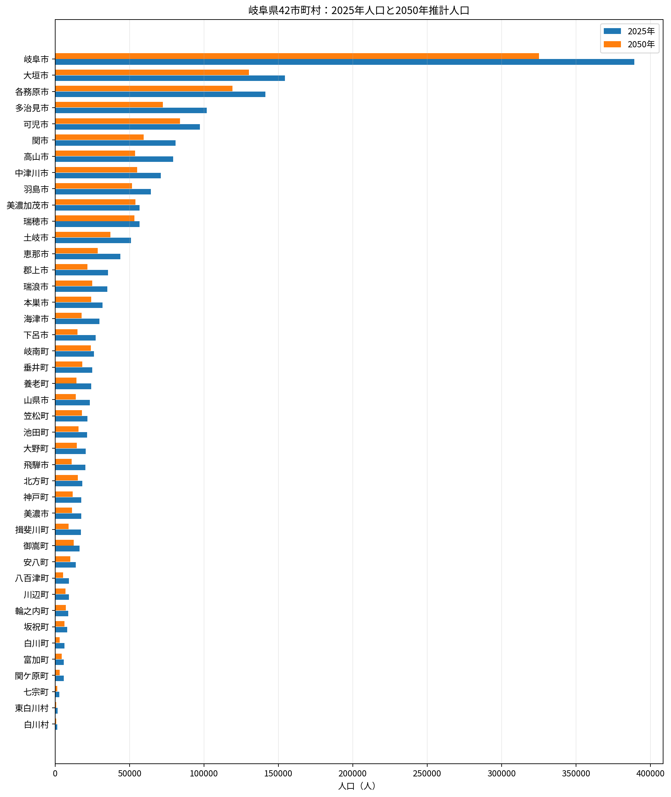
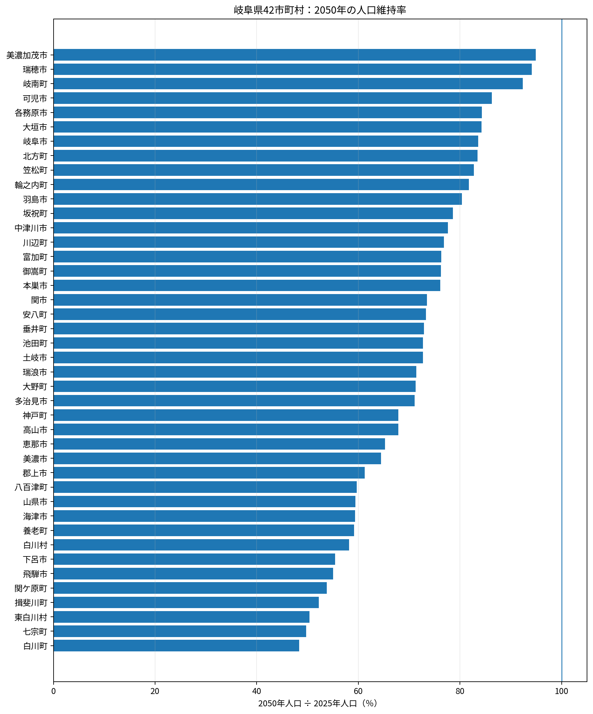
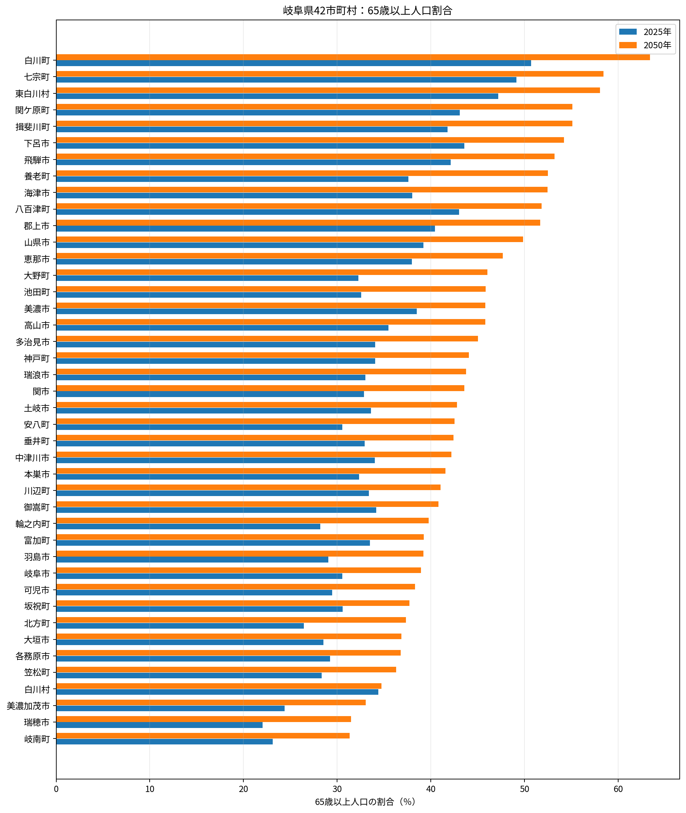
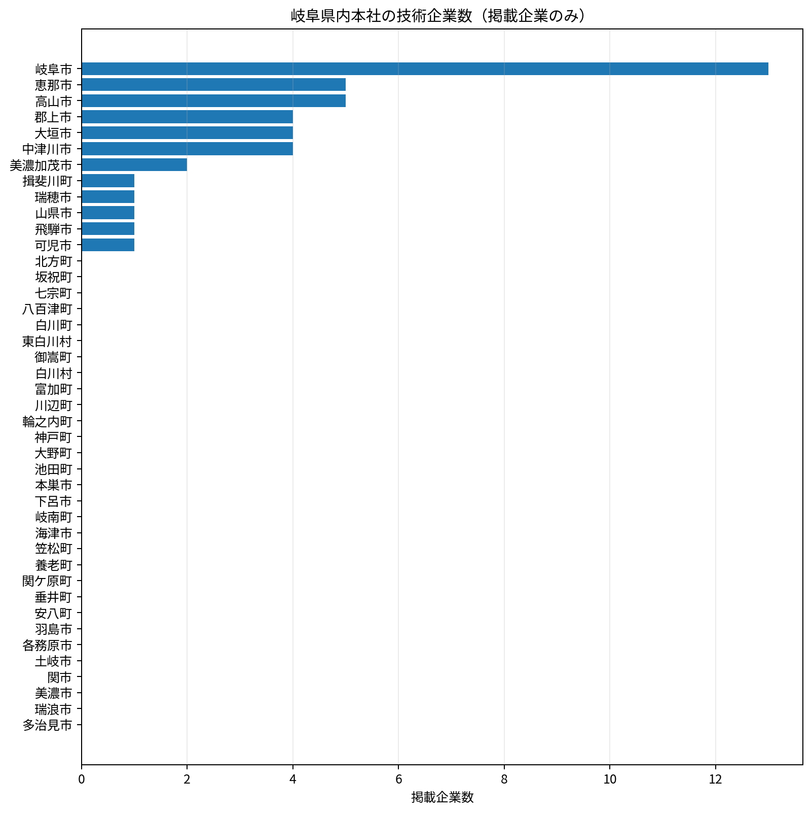
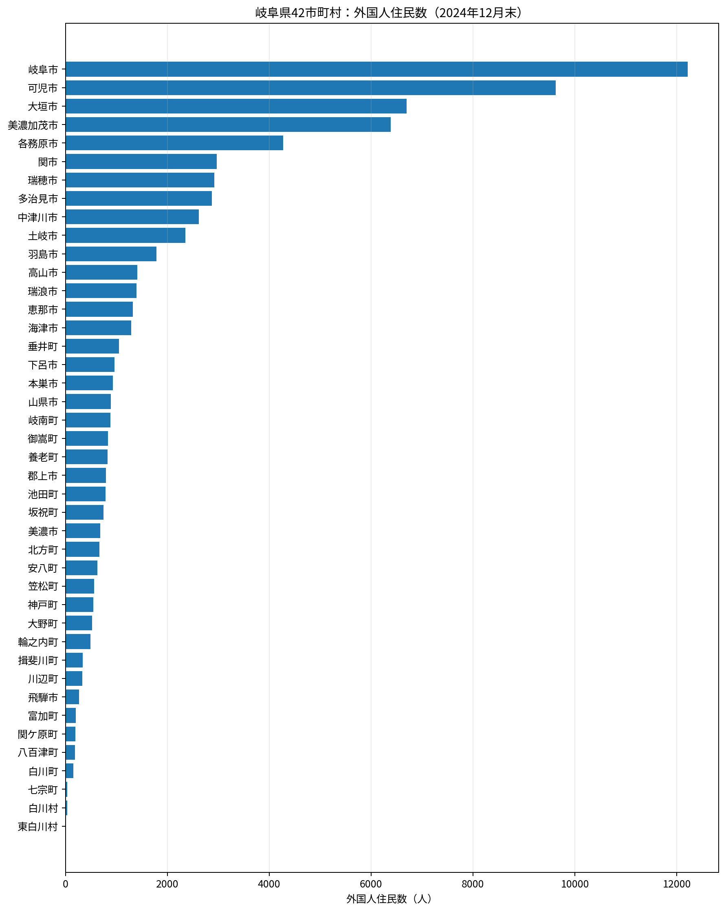
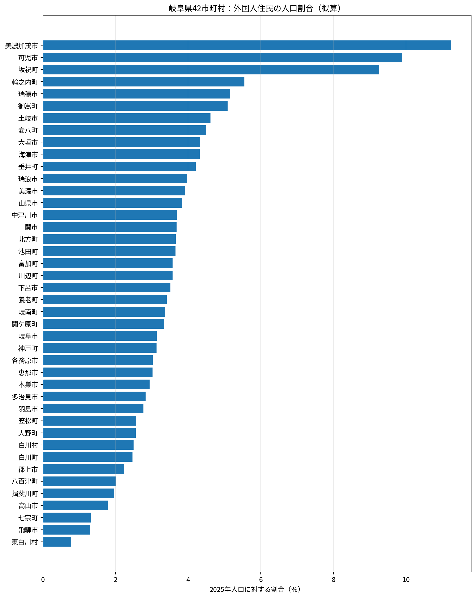
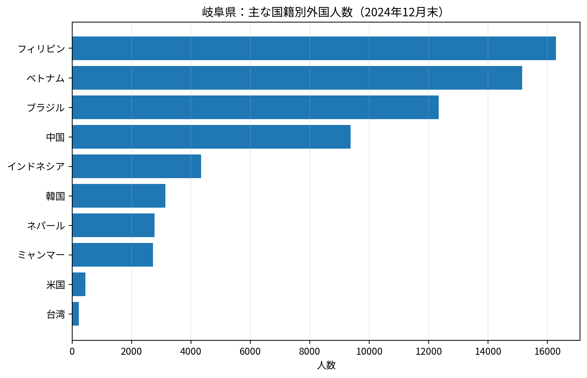
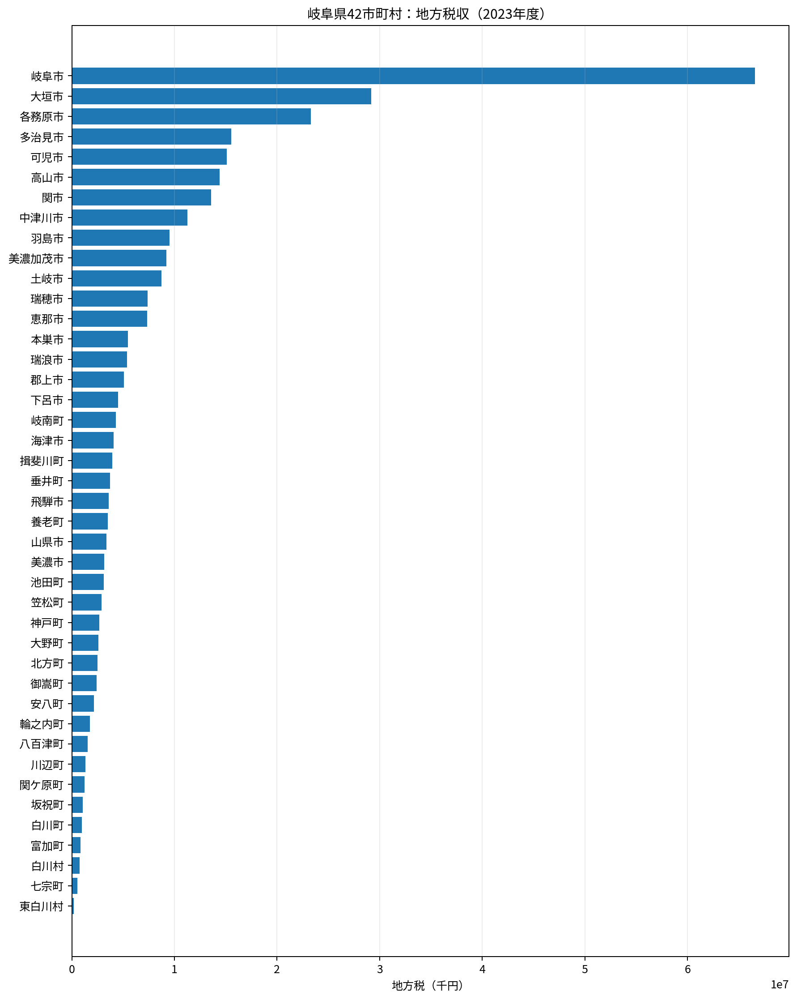
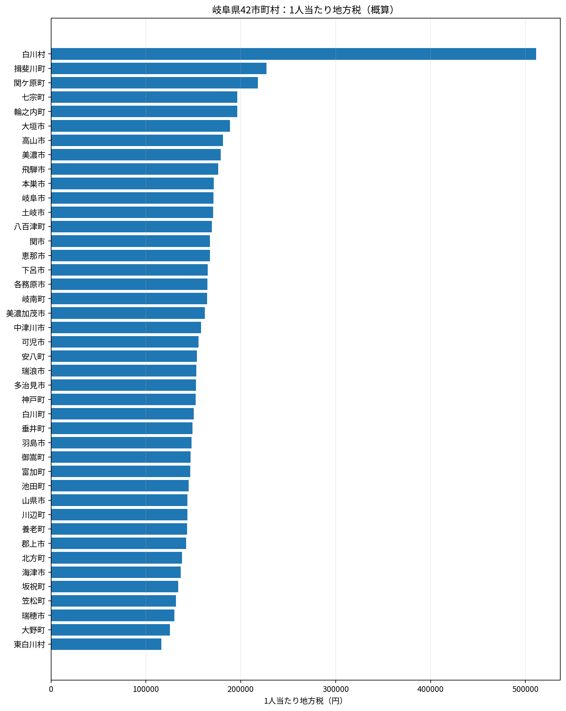

東濃圏域・中津川市
岐阜県全体の人口構造
岐阜県の人口は2020年の 1,978,742人 から、2025年速報では 1,891,489人 へ減少した。2050年の社人研推計は 1,468,392人 で、2025年から約 22.4% 減少する見込み。
2025年の年齢構成は、0～14歳が約 11.2%、15～64歳が約 56.9%、65歳以上が約 31.9%。2050年には65歳以上が約 40.6% となる。
年齢構成の扱い：2025年の市町村別年齢3区分は、社人研2025年推計の構成比を、令和7年国勢調査速報の総人口に按分した参考値。2050年は社人研の令和5年地域推計。
企業の扱い：岐阜県測量設計業協会、岐阜県建設コンサルタンツ協会・建設コンサルタンツ協会、中部地質調査業協会の公開名簿から、岐阜県内に本社所在地がある企業を整理した。協会未加入企業を含む県内全社の網羅的名簿ではなく、営業所・支店は数えていない。
外国人住民74,750人2024年12月末
県人口に対する割合約4.0%時点が異なる概算
2023年度 地方税3097.9億円42市町村合計
2050年税収単純試算2403.8億円人口だけを連動
掲載技術企業42社県内本社・協会名簿
外国人の時点：市町村別に精査した2024年12月末の公表値を使用。2025年12月末資料も県から公表済みだが、本版の市町村比較は2024年末で統一した。
税収：令和5年度（2023年度）の地方税決算額。2050年値は公式予測ではなく、2025年の1人当たり税収が続くと仮定した単純試算。山県市のみ取得制約のため参考推計として明記した。
人口・高齢化の比較




外国人住民と地方税
岐阜県の外国人住民は2024年12月末で74,750人。 人数では岐阜市、可児市、大垣市、美濃加茂市などが多く、 人口割合では可児市、美濃加茂市、坂祝町など製造業の集積地域が目立つ。 地方税は人口だけでなく、大規模工場、商業施設、観光資産、固定資産の構成によっても変わる。





県内本社の建設コンサル・地質調査・測量会社
同じ会社が複数の登録・協会分野に該当する場合は、複数のタグを表示している。会社名または市町村名で絞り込める。
東濃圏域・中津川市
中野測量設計株式会社
東濃圏域・中津川市
株式会社トライ
東濃圏域・中津川市
株式会社光測量コンサルタント
中濃圏域・可児市
株式会社田原コンサルタント
西濃圏域・大垣市
大建測量設計株式会社
西濃圏域・大垣市
大高理工株式会社
西濃圏域・大垣市
株式会社イビソク
西濃圏域・大垣市
株式会社三進
岐阜圏域・山県市
株式会社GHK
岐阜圏域・岐阜市
中央エンジニアリング株式会社
岐阜圏域・岐阜市
大同コンサルタンツ株式会社
岐阜圏域・岐阜市
大日コンサルタント株式会社
岐阜圏域・岐阜市
株式会社テイコク
岐阜圏域・岐阜市
株式会社メイホーエンジニアリング
岐阜圏域・岐阜市
株式会社ユニオン
岐阜圏域・岐阜市
株式会社三栄コンサルタント
岐阜圏域・岐阜市
株式会社創信
岐阜圏域・岐阜市
株式会社岐阜ソイルコンサルタント
岐阜圏域・岐阜市
株式会社朝日設計コンサルタント
岐阜圏域・岐阜市
株式会社東海テクノス
岐阜圏域・岐阜市
株式会社総合開発調査
岐阜圏域・岐阜市
株式会社興栄コンサルタント
東濃圏域・恵那市
大井調査設計株式会社
東濃圏域・恵那市
有限会社大矢コンサルタント
東濃圏域・恵那市
有限会社東濃技研
東濃圏域・恵那市
株式会社北辰測量設計
東濃圏域・恵那市
株式会社地域コンサルタント
西濃圏域・揖斐川町
株式会社カワセ測量設計
岐阜圏域・瑞穂市
株式会社東海プランニング
中濃圏域・美濃加茂市
大紘ジオテクノ株式会社
中濃圏域・美濃加茂市
株式会社中日コンサルタント
中濃圏域・郡上市
株式会社共栄コンサルタント
中濃圏域・郡上市
株式会社南出測量設計
中濃圏域・郡上市
株式会社大興計測技術
中濃圏域・郡上市
株式会社野田コンサルタント
飛騨圏域・飛騨市
株式会社相和コンサルタント
飛騨圏域・高山市
エヌティ測量設計株式会社
飛騨圏域・高山市
有限会社沖下測量
飛騨圏域・高山市
株式会社斐太プランニング
飛騨圏域・高山市
株式会社飛州コンサルタント
飛騨圏域・高山市
株式会社飛建測量企画
42市町村一覧
| 市町村 | 2020年 | 2025年 | 2050年 | 2050維持率 | 2025高齢化率 | 2050高齢化率 | 本社企業 | 外国人 | 外国人割合 | 2023地方税 | 1人当たり税 |
|---|---|---|---|---|---|---|---|---|---|---|---|
| 岐阜市 | 402,557 | 389,011 | 325,128 | 83.6% | 30.6% | 39.0% | 13 | 12,213人 | 3.1% | 665.6億円 | 17.1万円 |
| 大垣市 | 158,286 | 154,474 | 130,141 | 84.2% | 28.5% | 36.9% | 4 | 6,701人 | 4.3% | 291.6億円 | 18.9万円 |
| 各務原市 | 144,521 | 141,226 | 119,096 | 84.3% | 29.2% | 36.8% | 0 | 4,275人 | 3.0% | 232.9億円 | 16.5万円 |
| 多治見市 | 106,732 | 101,795 | 72,336 | 71.1% | 34.1% | 45.0% | 0 | 2,878人 | 2.8% | 155.5億円 | 15.3万円 |
| 可児市 | 99,968 | 97,210 | 83,832 | 86.2% | 29.5% | 38.3% | 1 | 9,620人 | 9.9% | 151.2億円 | 15.6万円 |
| 関市 | 85,283 | 80,844 | 59,419 | 73.5% | 32.9% | 43.6% | 0 | 2,973人 | 3.7% | 135.5億円 | 16.8万円 |
| 高山市 | 84,419 | 79,355 | 53,862 | 67.9% | 35.5% | 45.8% | 5 | 1,413人 | 1.8% | 143.8億円 | 18.1万円 |
| 中津川市 | 76,570 | 71,055 | 55,136 | 77.6% | 34.0% | 42.2% | 4 | 2,620人 | 3.7% | 112.5億円 | 15.8万円 |
| 羽島市 | 65,649 | 64,464 | 51,806 | 80.4% | 29.0% | 39.2% | 0 | 1,787人 | 2.8% | 95.4億円 | 14.8万円 |
| 美濃加茂市 | 56,689 | 56,872 | 53,983 | 94.9% | 24.4% | 33.0% | 2 | 6,388人 | 11.2% | 92.2億円 | 16.2万円 |
| 瑞穂市 | 56,388 | 56,671 | 53,347 | 94.1% | 22.0% | 31.5% | 1 | 2,921人 | 5.2% | 73.7億円 | 13.0万円 |
| 土岐市 | 55,348 | 51,044 | 37,104 | 72.7% | 33.6% | 42.8% | 0 | 2,355人 | 4.6% | 87.2億円 | 17.1万円 |
| 恵那市 | 47,774 | 43,844 | 28,611 | 65.3% | 38.0% | 47.7% | 5 | 1,323人 | 3.0% | 73.4億円 | 16.7万円 |
| 郡上市 | 38,997 | 35,540 | 21,763 | 61.2% | 40.4% | 51.7% | 4 | 793人 | 2.2% | 50.6億円 | 14.2万円 |
| 瑞浪市 | 37,150 | 35,064 | 25,047 | 71.4% | 33.0% | 43.7% | 0 | 1,395人 | 4.0% | 53.7億円 | 15.3万円 |
| 本巣市 | 32,928 | 31,785 | 24,186 | 76.1% | 32.3% | 41.6% | 0 | 933人 | 2.9% | 54.5億円 | 17.1万円 |
| 海津市 | 32,735 | 29,903 | 17,756 | 59.4% | 38.0% | 52.4% | 0 | 1,291人 | 4.3% | 40.8億円 | 13.7万円 |
| 下呂市 | 30,428 | 27,350 | 15,154 | 55.4% | 43.6% | 54.2% | 0 | 960人 | 3.5% | 45.2億円 | 16.5万円 |
| 岐南町 | 25,881 | 26,128 | 24,133 | 92.4% | 23.1% | 31.3% | 0 | 882人 | 3.4% | 43.0億円 | 16.4万円 |
| 垂井町 | 26,402 | 24,949 | 18,195 | 72.9% | 32.9% | 42.4% | 0 | 1,051人 | 4.2% | 37.2億円 | 14.9万円 |
| 養老町 | 26,882 | 24,371 | 14,417 | 59.2% | 37.6% | 52.5% | 0 | 830人 | 3.4% | 35.0億円 | 14.4万円 |
| 山県市 | 25,280 | 23,348 | 13,877 | 59.4% | 39.2% | 49.8% | 1 | 893人 | 3.8% | 33.6億円※ | 14.4万円 |
| 笠松町 | 22,208 | 21,833 | 18,063 | 82.7% | 28.3% | 36.3% | 0 | 561人 | 2.6% | 28.8億円 | 13.2万円 |
| 池田町 | 23,360 | 21,561 | 15,679 | 72.7% | 32.6% | 45.8% | 0 | 787人 | 3.7% | 31.3億円 | 14.5万円 |
| 大野町 | 22,041 | 20,549 | 14,650 | 71.3% | 32.3% | 46.0% | 0 | 525人 | 2.6% | 25.8億円 | 12.5万円 |
| 飛騨市 | 22,538 | 20,481 | 11,268 | 55.0% | 42.1% | 53.2% | 1 | 266人 | 1.3% | 36.1億円 | 17.6万円 |
| 北方町 | 18,139 | 18,239 | 15,217 | 83.4% | 26.5% | 37.3% | 0 | 668人 | 3.7% | 25.2億円 | 13.8万円 |
| 美濃市 | 19,247 | 17,590 | 11,343 | 64.5% | 38.5% | 45.8% | 0 | 687人 | 3.9% | 31.5億円 | 17.9万円 |
| 神戸町 | 18,585 | 17,590 | 11,943 | 67.9% | 34.1% | 44.1% | 0 | 550人 | 3.1% | 26.8億円 | 15.3万円 |
| 揖斐川町 | 19,529 | 17,295 | 9,033 | 52.2% | 41.8% | 55.1% | 1 | 340人 | 2.0% | 39.3億円 | 22.7万円 |
| 御嵩町 | 17,516 | 16,503 | 12,578 | 76.2% | 34.2% | 40.8% | 0 | 839人 | 5.1% | 24.3億円 | 14.7万円 |
| 安八町 | 14,355 | 13,892 | 10,182 | 73.3% | 30.5% | 42.5% | 0 | 624人 | 4.5% | 21.4億円 | 15.4万円 |
| 八百津町 | 10,195 | 9,241 | 5,514 | 59.7% | 43.0% | 51.8% | 0 | 185人 | 2.0% | 15.7億円 | 17.0万円 |
| 川辺町 | 9,860 | 9,239 | 7,100 | 76.8% | 33.4% | 41.0% | 0 | 330人 | 3.6% | 13.3億円 | 14.4万円 |
| 輪之内町 | 9,654 | 8,918 | 7,289 | 81.7% | 28.2% | 39.8% | 0 | 495人 | 5.6% | 17.5億円 | 19.6万円 |
| 坂祝町 | 8,071 | 8,114 | 6,378 | 78.6% | 30.6% | 37.7% | 0 | 751人 | 9.3% | 10.9億円 | 13.4万円 |
| 白川町 | 7,412 | 6,408 | 3,098 | 48.3% | 50.7% | 63.4% | 0 | 158人 | 2.5% | 9.6億円 | 15.0万円 |
| 富加町 | 5,626 | 5,795 | 4,422 | 76.3% | 33.5% | 39.3% | 0 | 207人 | 3.6% | 8.5億円 | 14.7万円 |
| 関ケ原町 | 6,610 | 5,776 | 3,105 | 53.8% | 43.1% | 55.1% | 0 | 193人 | 3.3% | 12.6億円 | 21.8万円 |
| 七宗町 | 3,402 | 2,873 | 1,429 | 49.7% | 49.1% | 58.4% | 0 | 38人 | 1.3% | 5.6億円 | 19.6万円 |
| 東白川村 | 2,016 | 1,809 | 911 | 50.4% | 47.2% | 58.1% | 0 | 14人 | 0.8% | 2.1億円 | 11.6万円 |
| 白川村 | 1,511 | 1,480 | 861 | 58.2% | 34.4% | 34.7% | 0 | 37人 | 2.5% | 7.6億円 | 51.1万円 |
REGION
岐阜圏域
2025年 772,705人 → 2050年 644,853人。本ページ掲載の県内本社技術企業は 15社。
岐阜圏域
岐阜市
2020年人口402,557人国勢調査
→
2025年人口389,011人国勢調査速報・県内1位
→
2050年人口325,128人社人研推計
地域の特徴
県都として商業・医療・教育・行政機能が集中。アパレル、機械、食品などの産業があり、長良川鵜飼と金華山が観光の中心。
県人口シェア20.6%2025年
2050年シェア22.1%県内での人口集中度
65歳以上30.6% → 39.0%2025年 → 2050年
地域産業・代表企業・農業
主な企業・工場・事業所
十六フィナンシャルグループトーカイヒマラヤ文溪堂
産業：県都として商業・金融・医療・教育・行政機能が集中。アパレル、機械、食品、印刷・出版などの産業がある。
特産・農林業・観光：枝豆、いちご、富有柿、ほうれんそうなどの都市近郊農業。長良川鵜飼と金華山が主要観光資源。
企業名は地域の産業構造を説明する代表例で、売上高・雇用者数の順位や全事業所を示すものではない。年齢3区分（総人数を反映）
2025年から2050年に16.4%減少同じ基準線・同じ縮尺
389,011291,758194,50697,2530
総人口 389,011人
2025年
- 0～14歳42,211人10.9%
- 15～64歳227,904人58.6%
- 65歳以上118,896人30.6%
総人口 325,128人
2050年
- 0～14歳31,636人9.7%
- 15～64歳166,852人51.3%
- 65歳以上126,640人39.0%
外国人住民
12,213人
2024年12月末／2025年人口比 約3.1%
2023年度 地方税
665.6億円
1人当たり 約17.1万円
2050年 税収単純試算
556.3億円
現在の1人当たり税収が続くと仮定
主なイベント
ぎふ長良川花火大会ぎふ信長まつり長良川鵜飼
主な学校
岐阜大学岐阜薬科大学岐阜高等学校
市町村合併2006年：旧岐阜市＋柳津町
出身・ゆかりの人物
高橋尚子陸上競技
伊藤英明俳優
熊田曜子タレント
堀未央奈俳優・タレント
県内本社の建設関連技術企業 13社
- 中央エンジニアリング株式会社測量設計
- 大同コンサルタンツ株式会社建設コンサルタント測量設計
- 大日コンサルタント株式会社建設コンサルタント測量設計
- 株式会社テイコク建設コンサルタント地質調査測量設計
- 株式会社メイホーエンジニアリング建設コンサルタント測量設計
- 株式会社ユニオン建設コンサルタント測量設計
- 株式会社三栄コンサルタント建設コンサルタント測量設計
- 株式会社創信建設コンサルタント測量設計
- 株式会社岐阜ソイルコンサルタント地質調査
- 株式会社朝日設計コンサルタント建設コンサルタント地質調査測量設計
- 株式会社東海テクノス地質調査
- 株式会社総合開発調査地質調査
- 株式会社興栄コンサルタント建設コンサルタント地質調査測量設計
岐阜圏域
羽島市
2020年人口65,649人国勢調査
→
2025年人口64,464人国勢調査速報・県内9位
→
2050年人口51,806人社人研推計
地域の特徴
東海道新幹線岐阜羽島駅と名神高速を持つ交通拠点。繊維、物流、製造業と都市近郊農業が特徴。
県人口シェア3.4%2025年
2050年シェア3.5%県内での人口集中度
65歳以上29.0% → 39.2%2025年 → 2050年
地域産業・代表企業・農業
主な企業・工場・事業所
岐阜羽島インター周辺の物流企業繊維・機械関連事業所
産業：東海道新幹線、名神高速道路を生かした物流・交流拠点。繊維、機械、倉庫・物流業が立地。
特産・農林業・観光：れんこん、米、野菜、花き。竹鼻別院の藤など観光資源もある。
企業名は地域の産業構造を説明する代表例で、売上高・雇用者数の順位や全事業所を示すものではない。年齢3区分（総人数を反映）
2025年から2050年に19.6%減少同じ基準線・同じ縮尺
64,46448,34832,23216,1160
総人口 64,464人
2025年
- 0～14歳7,526人11.7%
- 15～64歳38,217人59.3%
- 65歳以上18,721人29.0%
総人口 51,806人
2050年
- 0～14歳5,145人9.9%
- 15～64歳26,346人50.9%
- 65歳以上20,315人39.2%
外国人住民
1,787人
2024年12月末／2025年人口比 約2.8%
2023年度 地方税
95.4億円
1人当たり 約14.8万円
2050年 税収単純試算
76.7億円
現在の1人当たり税収が続くと仮定
主なイベント
美濃竹鼻ふじまつり竹鼻まつり濃尾大花火
主な学校
岐阜県立看護大学羽島北高等学校羽島高等学校
市町村合併平成の市町村合併なし
出身・ゆかりの人物
山田守建築家
円空僧・仏師、羽島ゆかり
県内本社の建設関連技術企業
今回使用した3協会の名簿では、この市町村に本社を置く掲載企業は確認されなかった。
岐阜圏域
各務原市
2020年人口144,521人国勢調査
→
2025年人口141,226人国勢調査速報・県内3位
→
2050年人口119,096人社人研推計
地域の特徴
航空宇宙・機械産業の集積地。航空自衛隊岐阜基地、川崎重工関連、河川環境と公園都市の特徴を持つ。
県人口シェア7.5%2025年
2050年シェア8.1%県内での人口集中度
65歳以上29.2% → 36.8%2025年 → 2050年
地域産業・代表企業・農業
主な企業・工場・事業所
川崎重工業岐阜工場岐阜車体工業天龍ホールディングス
産業：航空宇宙、自動車、機械産業が集積。航空自衛隊岐阜基地と航空宇宙博物館を持つ。
特産・農林業・観光：各務原にんじん、米、野菜。各務原キムチなど地域ブランドもある。
企業名は地域の産業構造を説明する代表例で、売上高・雇用者数の順位や全事業所を示すものではない。年齢3区分（総人数を反映）
2025年から2050年に15.7%減少同じ基準線・同じ縮尺
141,226105,92070,61335,3060
総人口 141,226人
2025年
- 0～14歳16,844人11.9%
- 15～64歳83,109人58.8%
- 65歳以上41,273人29.2%
総人口 119,096人
2050年
- 0～14歳12,905人10.8%
- 15～64歳62,388人52.4%
- 65歳以上43,803人36.8%
外国人住民
4,275人
2024年12月末／2025年人口比 約3.0%
2023年度 地方税
232.9億円
1人当たり 約16.5万円
2050年 税収単純試算
196.4億円
現在の1人当たり税収が続くと仮定
主なイベント
航空祭桜まつりかわしま燦々夏まつり
主な学校
東海学院大学各務原高等学校岐阜各務野高等学校
市町村合併2004年：旧各務原市＋川島町
出身・ゆかりの人物
上原彩子ピアニスト
山口晶歌手
航空宇宙分野の技術者地域ゆかり
県内本社の建設関連技術企業
今回使用した3協会の名簿では、この市町村に本社を置く掲載企業は確認されなかった。
岐阜圏域
山県市
2020年人口25,280人国勢調査
→
2025年人口23,348人国勢調査速報・県内22位
→
2050年人口13,877人社人研推計
地域の特徴
山林が広く、林業・木材、プラスチック、水栓関連などの製造業が特徴。清流とアウトドア資源を持つ。
県人口シェア1.2%2025年
2050年シェア0.9%県内での人口集中度
65歳以上39.2% → 49.8%2025年 → 2050年
地域産業・代表企業・農業
主な企業・工場・事業所
水生活製作所ミズタニバルブ水栓・樹脂関連企業
産業：水栓器具、プラスチック、木材、機械などの製造業が特徴。
特産・農林業・観光：利平栗、柿、米、野菜、林業。清流・山林を生かしたアウトドア資源を持つ。
企業名は地域の産業構造を説明する代表例で、売上高・雇用者数の順位や全事業所を示すものではない。年齢3区分（総人数を反映）
2025年から2050年に40.6%減少同じ基準線・同じ縮尺
23,34817,51111,6745,8370
総人口 23,348人
2025年
- 0～14歳2,171人9.3%
- 15～64歳12,025人51.5%
- 65歳以上9,152人39.2%
総人口 13,877人
2050年
- 0～14歳1,045人7.5%
- 15～64歳5,918人42.6%
- 65歳以上6,914人49.8%
外国人住民
893人
2024年12月末／2025年人口比 約3.8%
2023年度 地方税（参考推計）
33.6億円
1人当たり 約14.4万円
2050年 税収単純試算
20.0億円
現在の1人当たり税収が続くと仮定
主なイベント
ふるさと栗まつり山県市ふるさと祭り円原川・自然体験イベント
主な学校
山県高等学校高富中学校
市町村合併2003年：高富町＋伊自良村＋美山町
出身・ゆかりの人物
早矢仕有的実業家・丸善創業者
仙石秀久戦国武将・美濃ゆかり
県内本社の建設関連技術企業 1社
- 株式会社GHK測量設計
岐阜圏域
瑞穂市
2020年人口56,388人国勢調査
→
2025年人口56,671人国勢調査速報・県内11位
→
2050年人口53,347人社人研推計
地域の特徴
県内でも人口が比較的維持される住宅都市。国道21号沿線の商業・物流、製造業、都市近郊農業が中心。
県人口シェア3.0%2025年
2050年シェア3.6%県内での人口集中度
65歳以上22.0% → 31.5%2025年 → 2050年
地域産業・代表企業・農業
主な企業・工場・事業所
国道21号沿線の物流・製造企業自動車部品関連事業所
産業：岐阜都市圏の住宅都市で、物流、卸売、小売、自動車部品などが立地。
特産・農林業・観光：富有柿、梨、米、野菜などの都市近郊農業。
企業名は地域の産業構造を説明する代表例で、売上高・雇用者数の順位や全事業所を示すものではない。年齢3区分（総人数を反映）
2025年から2050年に5.9%減少同じ基準線・同じ縮尺
56,67142,50328,33614,1680
総人口 56,671人
2025年
- 0～14歳7,919人14.0%
- 15～64歳36,258人64.0%
- 65歳以上12,494人22.0%
総人口 53,347人
2050年
- 0～14歳6,611人12.4%
- 15～64歳29,947人56.1%
- 65歳以上16,789人31.5%
外国人住民
2,921人
2024年12月末／2025年人口比 約5.2%
2023年度 地方税
73.7億円
1人当たり 約13.0万円
2050年 税収単純試算
69.4億円
現在の1人当たり税収が続くと仮定
主なイベント
みずほふれあいフェスタ汽車まつり美江寺宿場まつり
主な学校
朝日大学穂積中学校巣南中学校
市町村合併2003年：穂積町＋巣南町
出身・ゆかりの人物
大友玲子ジャズ歌手
大平由香理日本画家
森和之政治家
県内本社の建設関連技術企業 1社
- 株式会社東海プランニング建設コンサルタント測量設計
岐阜圏域
本巣市
2020年人口32,928人国勢調査
→
2025年人口31,785人国勢調査速報・県内16位
→
2050年人口24,186人社人研推計
地域の特徴
柿などの農業、林業、製造業、大型商業施設が共存。根尾谷断層や淡墨桜など自然・地質資源を持つ。
県人口シェア1.7%2025年
2050年シェア1.6%県内での人口集中度
65歳以上32.3% → 41.6%2025年 → 2050年
地域産業・代表企業・農業
主な企業・工場・事業所
レシップホールディングス敷島産業大型商業施設
産業：電装機器、食品、商業、林業が共存。岐阜都市圏の住宅地域も含む。
特産・農林業・観光：富有柿、いちご、米、野菜。淡墨桜と根尾谷断層が代表的資源。
企業名は地域の産業構造を説明する代表例で、売上高・雇用者数の順位や全事業所を示すものではない。年齢3区分（総人数を反映）
2025年から2050年に23.9%減少同じ基準線・同じ縮尺
31,78523,83915,8927,9460
総人口 31,785人
2025年
- 0～14歳3,511人11.0%
- 15～64歳18,000人56.6%
- 65歳以上10,274人32.3%
総人口 24,186人
2050年
- 0～14歳2,367人9.8%
- 15～64歳11,768人48.7%
- 65歳以上10,051人41.6%
外国人住民
933人
2024年12月末／2025年人口比 約2.9%
2023年度 地方税
54.5億円
1人当たり 約17.1万円
2050年 税収単純試算
41.5億円
現在の1人当たり税収が続くと仮定
主なイベント
根尾谷淡墨桜まつり本巣市花火大会富有柿の里いとぬき祭
主な学校
岐阜工業高等専門学校本巣松陽高等学校岐阜第一高等学校
市町村合併2004年：本巣町＋真正町＋糸貫町＋根尾村
出身・ゆかりの人物
継体天皇淡墨桜伝承の人物
根尾谷断層を研究した地震学者地域ゆかり
県内本社の建設関連技術企業
今回使用した3協会の名簿では、この市町村に本社を置く掲載企業は確認されなかった。
岐阜圏域
岐南町
2020年人口25,881人国勢調査
→
2025年人口26,128人国勢調査速報・県内19位
→
2050年人口24,133人社人研推計
地域の特徴
岐阜市に隣接する人口密度の高い町。国道21号・22号周辺に物流、卸売、小売、サービス業が集積。
県人口シェア1.4%2025年
2050年シェア1.6%県内での人口集中度
65歳以上23.1% → 31.3%2025年 → 2050年
地域産業・代表企業・農業
主な企業・工場・事業所
エスラインG物流・卸売企業国道沿線の商業事業者
産業：国道21号・22号周辺に物流、卸売、小売、サービス業が集積。
特産・農林業・観光：徳田ねぎ、米、近郊野菜。
企業名は地域の産業構造を説明する代表例で、売上高・雇用者数の順位や全事業所を示すものではない。年齢3区分（総人数を反映）
2025年から2050年に7.6%減少同じ基準線・同じ縮尺
26,12819,59613,0646,5320
総人口 26,128人
2025年
- 0～14歳3,659人14.0%
- 15～64歳16,426人62.9%
- 65歳以上6,043人23.1%
総人口 24,133人
2050年
- 0～14歳3,003人12.4%
- 15～64歳13,569人56.2%
- 65歳以上7,561人31.3%
外国人住民
882人
2024年12月末／2025年人口比 約3.4%
2023年度 地方税
43.0億円
1人当たり 約16.4万円
2050年 税収単純試算
39.7億円
現在の1人当たり税収が続くと仮定
主なイベント
岐南フェスタやろまい夏まつり町民スポーツイベント
主な学校
岐南工業高等学校岐南中学校
市町村合併平成の市町村合併なし
出身・ゆかりの人物
若山耀人俳優
地域出身のスポーツ選手代表例
県内本社の建設関連技術企業
今回使用した3協会の名簿では、この市町村に本社を置く掲載企業は確認されなかった。
岐阜圏域
笠松町
2020年人口22,208人国勢調査
→
2025年人口21,833人国勢調査速報・県内23位
→
2050年人口18,063人社人研推計
地域の特徴
岐阜市・名古屋方面への交通利便性が高い住宅・商業の町。笠松競馬場と木曽川河川敷が特徴。
県人口シェア1.2%2025年
2050年シェア1.2%県内での人口集中度
65歳以上28.3% → 36.3%2025年 → 2050年
地域産業・代表企業・農業
主な企業・工場・事業所
ジーエフシー笠松競馬関連事業者
産業：業務用食品、商業、サービス、競馬関連が特徴。岐阜・名古屋への交通利便性が高い。
特産・農林業・観光：米、野菜、花き。木曽川河川敷を活用したレジャーもある。
企業名は地域の産業構造を説明する代表例で、売上高・雇用者数の順位や全事業所を示すものではない。年齢3区分（総人数を反映）
2025年から2050年に17.3%減少同じ基準線・同じ縮尺
21,83316,37510,9165,4580
総人口 21,833人
2025年
- 0～14歳2,496人11.4%
- 15～64歳13,151人60.2%
- 65歳以上6,186人28.3%
総人口 18,063人
2050年
- 0～14歳1,899人10.5%
- 15～64歳9,606人53.2%
- 65歳以上6,558人36.3%
外国人住民
561人
2024年12月末／2025年人口比 約2.6%
2023年度 地方税
28.8億円
1人当たり 約13.2万円
2050年 税収単純試算
23.8億円
現在の1人当たり税収が続くと仮定
主なイベント
笠松春まつりリバーサイドカーニバル笠松競馬イベント
主な学校
岐阜工業高等学校笠松中学校
市町村合併平成の市町村合併なし
出身・ゆかりの人物
安藤勝己元騎手
オグリキャップ関係者笠松競馬ゆかり
県内本社の建設関連技術企業
今回使用した3協会の名簿では、この市町村に本社を置く掲載企業は確認されなかった。
岐阜圏域
北方町
2020年人口18,139人国勢調査
→
2025年人口18,239人国勢調査速報・県内27位
→
2050年人口15,217人社人研推計
地域の特徴
面積が小さく人口密度が高い住宅・商業の町。岐阜市・瑞穂市へのアクセスが良い。
県人口シェア1.0%2025年
2050年シェア1.0%県内での人口集中度
65歳以上26.5% → 37.3%2025年 → 2050年
地域産業・代表企業・農業
主な企業・工場・事業所
大型小売・医療・サービス事業所
産業：面積が小さく人口密度が高い住宅・商業地域。岐阜市への通勤圏。
特産・農林業・観光：近郊野菜、米。商業・医療サービスの比重が高い。
企業名は地域の産業構造を説明する代表例で、売上高・雇用者数の順位や全事業所を示すものではない。年齢3区分（総人数を反映）
2025年から2050年に16.6%減少同じ基準線・同じ縮尺
18,23913,6799,1204,5600
総人口 18,239人
2025年
- 0～14歳2,328人12.8%
- 15～64歳11,086人60.8%
- 65歳以上4,825人26.5%
総人口 15,217人
2050年
- 0～14歳1,633人10.7%
- 15～64歳7,901人51.9%
- 65歳以上5,683人37.3%
外国人住民
668人
2024年12月末／2025年人口比 約3.7%
2023年度 地方税
25.2億円
1人当たり 約13.8万円
2050年 税収単純試算
21.0億円
現在の1人当たり税収が続くと仮定
主なイベント
きたがた清流フェス北方まつり円鏡寺公園イベント
主な学校
北方中学校北方西小学校
市町村合併平成の市町村合併なし
出身・ゆかりの人物
安東守就戦国武将・北方城ゆかり
戸田氏鉄大名・地域ゆかり
県内本社の建設関連技術企業
今回使用した3協会の名簿では、この市町村に本社を置く掲載企業は確認されなかった。
REGION
西濃圏域
2025年 339,278人 → 2050年 252,390人。本ページ掲載の県内本社技術企業は 5社。
西濃圏域
大垣市
2020年人口158,286人国勢調査
→
2025年人口154,474人国勢調査速報・県内2位
→
2050年人口130,141人社人研推計
地域の特徴
豊富な地下水を生かした「水都」。電子・機械・化学・IT関連の製造業が集積し、西濃地域の商業・交通拠点。
県人口シェア8.2%2025年
2050年シェア8.9%県内での人口集中度
65歳以上28.5% → 36.9%2025年 → 2050年
地域産業・代表企業・農業
主な企業・工場・事業所
イビデンセイノーホールディングス大垣共立銀行太平洋工業
産業：電子部品、物流、金融、自動車部品、情報産業が集積する西濃地域の中心都市。
特産・農林業・観光：米、梨、富有柿、いちごなど。豊富な地下水を生かした食品・飲料産業も特徴。
企業名は地域の産業構造を説明する代表例で、売上高・雇用者数の順位や全事業所を示すものではない。年齢3区分（総人数を反映）
2025年から2050年に15.8%減少同じ基準線・同じ縮尺
154,474115,85677,23738,6180
総人口 154,474人
2025年
- 0～14歳18,418人11.9%
- 15～64歳91,958人59.5%
- 65歳以上44,098人28.5%
総人口 130,141人
2050年
- 0～14歳13,655人10.5%
- 15～64歳68,522人52.7%
- 65歳以上47,964人36.9%
外国人住民
6,701人
2024年12月末／2025年人口比 約4.3%
2023年度 地方税
291.6億円
1人当たり 約18.9万円
2050年 税収単純試算
245.7億円
現在の1人当たり税収が続くと仮定
主なイベント
大垣まつり水都まつり十万石まつり
主な学校
岐阜協立大学情報科学芸術大学院大学大垣北高等学校
市町村合併2006年：旧大垣市＋上石津町＋墨俣町
出身・ゆかりの人物
棚橋弘至プロレスラー
細川茂樹俳優
大今良時漫画家
早野宏史サッカー指導者
県内本社の建設関連技術企業 4社
- 大建測量設計株式会社測量設計
- 大高理工株式会社測量設計
- 株式会社イビソク建設コンサルタント測量設計
- 株式会社三進建設コンサルタント測量設計
西濃圏域
海津市
2020年人口32,735人国勢調査
→
2025年人口29,903人国勢調査速報・県内17位
→
2050年人口17,756人社人研推計
地域の特徴
木曽三川の低平地に広がる農業地域。トマト・きゅうり・米などの生産と、物流・工業団地が特徴。
県人口シェア1.6%2025年
2050年シェア1.2%県内での人口集中度
65歳以上38.0% → 52.4%2025年 → 2050年
地域産業・代表企業・農業
主な企業・工場・事業所
工業団地・物流企業食品・機械関連事業所
産業：木曽三川の低平地に工業団地、物流施設、農業地域が広がる。
特産・農林業・観光：トマト、きゅうり、南濃みかん、米、麦。千代保稲荷と木曽三川公園が主要観光地。
企業名は地域の産業構造を説明する代表例で、売上高・雇用者数の順位や全事業所を示すものではない。年齢3区分（総人数を反映）
2025年から2050年に40.6%減少同じ基準線・同じ縮尺
29,90322,42714,9527,4760
総人口 29,903人
2025年
- 0～14歳2,492人8.3%
- 15～64歳16,040人53.6%
- 65歳以上11,371人38.0%
総人口 17,756人
2050年
- 0～14歳1,023人5.8%
- 15～64歳7,420人41.8%
- 65歳以上9,313人52.4%
外国人住民
1,291人
2024年12月末／2025年人口比 約4.3%
2023年度 地方税
40.8億円
1人当たり 約13.7万円
2050年 税収単純試算
24.3億円
現在の1人当たり税収が続くと仮定
主なイベント
木曽三川公園チューリップ祭今尾の左義長海津市産業感謝祭
主な学校
海津明誠高等学校日新中学校
市町村合併2005年：海津町＋平田町＋南濃町
出身・ゆかりの人物
大橋翠石日本画家
嶋聡政治家・経営者
県内本社の建設関連技術企業
今回使用した3協会の名簿では、この市町村に本社を置く掲載企業は確認されなかった。
西濃圏域
養老町
2020年人口26,882人国勢調査
→
2025年人口24,371人国勢調査速報・県内21位
→
2050年人口14,417人社人研推計
地域の特徴
養老の滝・養老公園の観光、食肉・食品関連、農業が中心。名神高速沿線の製造業も立地。
県人口シェア1.3%2025年
2050年シェア1.0%県内での人口集中度
65歳以上37.6% → 52.5%2025年 → 2050年
地域産業・代表企業・農業
主な企業・工場・事業所
養老ミート食肉・食品関連事業者製造工場
産業：食肉加工、食品、製造業と観光が中心。
特産・農林業・観光：米、野菜、ひょうたん、畜産。養老の滝・養老公園が観光の核。
企業名は地域の産業構造を説明する代表例で、売上高・雇用者数の順位や全事業所を示すものではない。年齢3区分（総人数を反映）
2025年から2050年に40.8%減少同じ基準線・同じ縮尺
24,37118,27812,1866,0930
総人口 24,371人
2025年
- 0～14歳2,109人8.7%
- 15～64歳13,102人53.8%
- 65歳以上9,160人37.6%
総人口 14,417人
2050年
- 0～14歳846人5.9%
- 15～64歳6,005人41.7%
- 65歳以上7,566人52.5%
外国人住民
830人
2024年12月末／2025年人口比 約3.4%
2023年度 地方税
35.0億円
1人当たり 約14.4万円
2050年 税収単純試算
20.7億円
現在の1人当たり税収が続くと仮定
主なイベント
養老公園もみじまつり養老町産業文化祭養老改元関連イベント
主な学校
大垣養老高等学校高田中学校
市町村合併平成の市町村合併なし
出身・ゆかりの人物
鬼面山谷五郎大相撲力士
田中道麿国学者
県内本社の建設関連技術企業
今回使用した3協会の名簿では、この市町村に本社を置く掲載企業は確認されなかった。
西濃圏域
垂井町
2020年人口26,402人国勢調査
→
2025年人口24,949人国勢調査速報・県内20位
→
2050年人口18,195人社人研推計
地域の特徴
中山道の宿場町で、製造業と農業が共存。南宮大社、竹中半兵衛ゆかりの地としても知られる。
県人口シェア1.3%2025年
2050年シェア1.2%県内での人口集中度
65歳以上32.9% → 42.4%2025年 → 2050年
地域産業・代表企業・農業
主な企業・工場・事業所
ナブテスコ垂井工場ユニチカ垂井事業所グルマンマルセ
産業：機械、鉄道・航空関連部品、繊維、食品製造が立地。
特産・農林業・観光：米、野菜、はちみつ。南宮大社と中山道垂井宿が代表的資源。
企業名は地域の産業構造を説明する代表例で、売上高・雇用者数の順位や全事業所を示すものではない。年齢3区分（総人数を反映）
2025年から2050年に27.1%減少同じ基準線・同じ縮尺
24,94918,71212,4746,2370
総人口 24,949人
2025年
- 0～14歳2,697人10.8%
- 15～64歳14,032人56.2%
- 65歳以上8,220人32.9%
総人口 18,195人
2050年
- 0～14歳1,677人9.2%
- 15～64歳8,803人48.4%
- 65歳以上7,715人42.4%
外国人住民
1,051人
2024年12月末／2025年人口比 約4.2%
2023年度 地方税
37.2億円
1人当たり 約14.9万円
2050年 税収単純試算
27.1億円
現在の1人当たり税収が続くと仮定
主なイベント
垂井曳やままつり南宮大社例大祭たるいまつり
主な学校
不破高等学校不破中学校北中学校
市町村合併平成の市町村合併なし
出身・ゆかりの人物
竹中半兵衛戦国武将・垂井ゆかり
高木守道元プロ野球選手
県内本社の建設関連技術企業
今回使用した3協会の名簿では、この市町村に本社を置く掲載企業は確認されなかった。
西濃圏域
関ケ原町
2020年人口6,610人国勢調査
→
2025年人口5,776人国勢調査速報・県内39位
→
2050年人口3,105人社人研推計
地域の特徴
天下分け目の合戦の歴史観光が中心。名神高速・国道21号の交通条件を生かした物流・製造業もある。
県人口シェア0.3%2025年
2050年シェア0.2%県内での人口集中度
65歳以上43.1% → 55.1%2025年 → 2050年
地域産業・代表企業・農業
主な企業・工場・事業所
関ケ原製作所関ケ原石材
産業：大型産業機械、石材、物流と歴史観光が中心。
特産・農林業・観光：伊吹在来そば、米、野菜。関ケ原古戦場が最大の観光資源。
企業名は地域の産業構造を説明する代表例で、売上高・雇用者数の順位や全事業所を示すものではない。年齢3区分（総人数を反映）
2025年から2050年に46.2%減少同じ基準線・同じ縮尺
5,7764,3322,8881,4440
総人口 5,776人
2025年
- 0～14歳429人7.4%
- 15～64歳2,859人49.5%
- 65歳以上2,488人43.1%
総人口 3,105人
2050年
- 0～14歳172人5.5%
- 15～64歳1,222人39.4%
- 65歳以上1,711人55.1%
外国人住民
193人
2024年12月末／2025年人口比 約3.3%
2023年度 地方税
12.6億円
1人当たり 約21.8万円
2050年 税収単純試算
6.8億円
現在の1人当たり税収が続くと仮定
主なイベント
関ケ原合戦祭り関ケ原古戦場イベント今須宿まつり
主な学校
関ケ原中学校関ケ原小学校
市町村合併平成の市町村合併なし
出身・ゆかりの人物
石田三成戦国武将・関ケ原ゆかり
大谷吉継戦国武将・関ケ原ゆかり
県内本社の建設関連技術企業
今回使用した3協会の名簿では、この市町村に本社を置く掲載企業は確認されなかった。
西濃圏域
神戸町
2020年人口18,585人国勢調査
→
2025年人口17,590人国勢調査速報・県内28位
→
2050年人口11,943人社人研推計
地域の特徴
ばら栽培などの農業と製造業が特徴。大垣市に近く、住宅地としての性格も持つ。
県人口シェア0.9%2025年
2050年シェア0.8%県内での人口集中度
65歳以上34.1% → 44.1%2025年 → 2050年
地域産業・代表企業・農業
主な企業・工場・事業所
三菱マテリアル岐阜製作所工業団地企業
産業：超硬工具、機械・金属などの製造業が地域雇用を支える。
特産・農林業・観光：ばら、小松菜、米、野菜。
企業名は地域の産業構造を説明する代表例で、売上高・雇用者数の順位や全事業所を示すものではない。年齢3区分（総人数を反映）
2025年から2050年に32.1%減少同じ基準線・同じ縮尺
17,59013,1928,7954,3980
総人口 17,590人
2025年
- 0～14歳1,798人10.2%
- 15～64歳9,800人55.7%
- 65歳以上5,992人34.1%
総人口 11,943人
2050年
- 0～14歳990人8.3%
- 15～64歳5,692人47.7%
- 65歳以上5,261人44.1%
外国人住民
550人
2024年12月末／2025年人口比 約3.1%
2023年度 地方税
26.8億円
1人当たり 約15.3万円
2050年 税収単純試算
18.2億円
現在の1人当たり税収が続くと仮定
主なイベント
ごうどばら祭り神戸町ふるさと祭り日吉神社例大祭
主な学校
神戸中学校神戸小学校
市町村合併平成の市町村合併なし
出身・ゆかりの人物
日比野五鳳書家
ばら文化に関わる育種家地域ゆかり
県内本社の建設関連技術企業
今回使用した3協会の名簿では、この市町村に本社を置く掲載企業は確認されなかった。
西濃圏域
輪之内町
2020年人口9,654人国勢調査
→
2025年人口8,918人国勢調査速報・県内35位
→
2050年人口7,289人社人研推計
地域の特徴
水田農業と工業団地を持つ輪中の町。自動車・物流関連の立地がみられる。
県人口シェア0.5%2025年
2050年シェア0.5%県内での人口集中度
65歳以上28.2% → 39.8%2025年 → 2050年
地域産業・代表企業・農業
主な企業・工場・事業所
未来工業工業団地企業
産業：電設資材、機械、物流と水田農業が共存する輪中地域。
特産・農林業・観光：米、麦、大豆、野菜。輪中の治水文化が特徴。
企業名は地域の産業構造を説明する代表例で、売上高・雇用者数の順位や全事業所を示すものではない。年齢3区分（総人数を反映）
2025年から2050年に18.3%減少同じ基準線・同じ縮尺
8,9186,6884,4592,2300
総人口 8,918人
2025年
- 0～14歳1,012人11.3%
- 15～64歳5,392人60.5%
- 65歳以上2,514人28.2%
総人口 7,289人
2050年
- 0～14歳643人8.8%
- 15～64歳3,747人51.4%
- 65歳以上2,899人39.8%
外国人住民
495人
2024年12月末／2025年人口比 約5.6%
2023年度 地方税
17.5億円
1人当たり 約19.6万円
2050年 税収単純試算
14.3億円
現在の1人当たり税収が続くと仮定
主なイベント
輪之内ふれあいフェスタ納涼ふるさとまつり輪中関連イベント
主な学校
輪之内中学校仁木小学校
市町村合併平成の市町村合併なし
出身・ゆかりの人物
川瀬五作陶芸家
加納冨美子舞踊教育者
県内本社の建設関連技術企業
今回使用した3協会の名簿では、この市町村に本社を置く掲載企業は確認されなかった。
西濃圏域
安八町
2020年人口14,355人国勢調査
→
2025年人口13,892人国勢調査速報・県内32位
→
2050年人口10,182人社人研推計
地域の特徴
名神高速・東海環状道に近い工業・物流立地と農業が特徴。大垣・岐阜方面の通勤圏。
県人口シェア0.7%2025年
2050年シェア0.7%県内での人口集中度
65歳以上30.5% → 42.5%2025年 → 2050年
地域産業・代表企業・農業
主な企業・工場・事業所
ギフハイテック工業団地・物流企業
産業：自動車部品、機械、物流が立地し、名古屋・大垣圏の交通条件を生かす。
特産・農林業・観光：米、野菜、梅。百梅園が地域資源。
企業名は地域の産業構造を説明する代表例で、売上高・雇用者数の順位や全事業所を示すものではない。年齢3区分（総人数を反映）
2025年から2050年に26.7%減少同じ基準線・同じ縮尺
13,89210,4196,9463,4730
総人口 13,892人
2025年
- 0～14歳1,552人11.2%
- 15～64歳8,098人58.3%
- 65歳以上4,242人30.5%
総人口 10,182人
2050年
- 0～14歳940人9.2%
- 15～64歳4,912人48.2%
- 65歳以上4,330人42.5%
外国人住民
624人
2024年12月末／2025年人口比 約4.5%
2023年度 地方税
21.4億円
1人当たり 約15.4万円
2050年 税収単純試算
15.7億円
現在の1人当たり税収が続くと仮定
主なイベント
安八ふれあい祭り百梅園梅まつり安八町文化祭
主な学校
安八中学校登龍中学校
市町村合併平成の市町村合併なし
出身・ゆかりの人物
安八町出身の文化・スポーツ関係者郷土人物
宝暦治水の先人地域ゆかり
県内本社の建設関連技術企業
今回使用した3協会の名簿では、この市町村に本社を置く掲載企業は確認されなかった。
西濃圏域
揖斐川町
2020年人口19,529人国勢調査
→
2025年人口17,295人国勢調査速報・県内30位
→
2050年人口9,033人社人研推計
地域の特徴
広大な山林と揖斐川水系を持ち、林業、茶、ダム・水力、セメント・紙関連などの産業が特徴。
県人口シェア0.9%2025年
2050年シェア0.6%県内での人口集中度
65歳以上41.8% → 55.1%2025年 → 2050年
地域産業・代表企業・農業
主な企業・工場・事業所
西濃建設製紙・セメント・水力関連事業者
産業：建設、製紙、セメント、水力発電、林業が特徴。広大な山林とダムを持つ。
特産・農林業・観光：揖斐茶・春日茶、しいたけ、米、ジビエ、林産物。
企業名は地域の産業構造を説明する代表例で、売上高・雇用者数の順位や全事業所を示すものではない。年齢3区分（総人数を反映）
2025年から2050年に47.8%減少同じ基準線・同じ縮尺
17,29512,9718,6484,3240
総人口 17,295人
2025年
- 0～14歳1,515人8.8%
- 15～64歳8,554人49.5%
- 65歳以上7,226人41.8%
総人口 9,033人
2050年
- 0～14歳649人7.2%
- 15～64歳3,407人37.7%
- 65歳以上4,977人55.1%
外国人住民
340人
2024年12月末／2025年人口比 約2.0%
2023年度 地方税
39.3億円
1人当たり 約22.7万円
2050年 税収単純試算
20.5億円
現在の1人当たり税収が続くと仮定
主なイベント
いびがわマラソン谷汲山華厳寺春・秋まつり揖斐川町産業フェスティバル
主な学校
揖斐高等学校揖斐川中学校
市町村合併2005年：旧揖斐川町＋谷汲村＋春日村＋久瀬村＋藤橋村＋坂内村
出身・ゆかりの人物
所郁太郎幕末の医師・地域ゆかり
野原櫻州日本画家
県内本社の建設関連技術企業 1社
- 株式会社カワセ測量設計測量設計
西濃圏域
大野町
2020年人口22,041人国勢調査
→
2025年人口20,549人国勢調査速報・県内25位
→
2050年人口14,650人社人研推計
地域の特徴
富有柿、ばら、野菜などの農業が盛ん。製造業と岐阜・大垣方面の住宅地としての性格も持つ。
県人口シェア1.1%2025年
2050年シェア1.0%県内での人口集中度
65歳以上32.3% → 46.0%2025年 → 2050年
地域産業・代表企業・農業
主な企業・工場・事業所
工業団地の製造企業食品・機械関連事業所
産業：製造業と岐阜・大垣方面の住宅地としての性格を持つ。
特産・農林業・観光：富有柿、ばら、野菜、米。
企業名は地域の産業構造を説明する代表例で、売上高・雇用者数の順位や全事業所を示すものではない。年齢3区分（総人数を反映）
2025年から2050年に28.7%減少同じ基準線・同じ縮尺
20,54915,41210,2745,1370
総人口 20,549人
2025年
- 0～14歳2,286人11.1%
- 15～64歳11,631人56.6%
- 65歳以上6,632人32.3%
総人口 14,650人
2050年
- 0～14歳1,293人8.8%
- 15～64歳6,613人45.1%
- 65歳以上6,744人46.0%
外国人住民
525人
2024年12月末／2025年人口比 約2.6%
2023年度 地方税
25.8億円
1人当たり 約12.5万円
2050年 税収単純試算
18.4億円
現在の1人当たり税収が続くと仮定
主なイベント
おおのフェスタバラまつり大野柿・牡蠣まつり
主な学校
大野中学校揖東中学校
市町村合併平成の市町村合併なし
出身・ゆかりの人物
所郁太郎幕末の医師
富有柿の普及に関わった先人地域ゆかり
県内本社の建設関連技術企業
今回使用した3協会の名簿では、この市町村に本社を置く掲載企業は確認されなかった。
西濃圏域
池田町
2020年人口23,360人国勢調査
→
2025年人口21,561人国勢調査速報・県内24位
→
2050年人口15,679人社人研推計
地域の特徴
池田山と揖斐茶で知られ、農業・観光・製造業が共存。大垣方面の通勤圏でもある。
県人口シェア1.1%2025年
2050年シェア1.1%県内での人口集中度
65歳以上32.6% → 45.8%2025年 → 2050年
地域産業・代表企業・農業
主な企業・工場・事業所
タニサケ製造・食品関連事業所
産業：防虫製品、製造業、観光が特徴。
特産・農林業・観光：揖斐茶、梅、ぶどう、米。池田山と温泉が観光資源。
企業名は地域の産業構造を説明する代表例で、売上高・雇用者数の順位や全事業所を示すものではない。年齢3区分（総人数を反映）
2025年から2050年に27.3%減少同じ基準線・同じ縮尺
21,56116,17110,7805,3900
総人口 21,561人
2025年
- 0～14歳2,296人10.6%
- 15～64歳12,245人56.8%
- 65歳以上7,020人32.6%
総人口 15,679人
2050年
- 0～14歳1,162人7.4%
- 15～64歳7,330人46.8%
- 65歳以上7,187人45.8%
外国人住民
787人
2024年12月末／2025年人口比 約3.7%
2023年度 地方税
31.3億円
1人当たり 約14.5万円
2050年 税収単純試算
22.7億円
現在の1人当たり税収が続くと仮定
主なイベント
みの池田ふるさと祭池田山フェスタいけだ農業祭
主な学校
池田高等学校池田中学校
市町村合併平成の市町村合併なし
出身・ゆかりの人物
堀島行真フリースタイルスキー
河村目呂二彫刻家
県内本社の建設関連技術企業
今回使用した3協会の名簿では、この市町村に本社を置く掲載企業は確認されなかった。
REGION
中濃圏域
2025年 348,038人 → 2050年 271,770人。本ページ掲載の県内本社技術企業は 7社。
中濃圏域
関市
2020年人口85,283人国勢調査
→
2025年人口80,844人国勢調査速報・県内6位
→
2050年人口59,419人社人研推計
地域の特徴
世界的な刃物産地。自動車・機械・金属加工など製造業の裾野が広く、長良川上流の自然資源も持つ。
県人口シェア4.3%2025年
2050年シェア4.0%県内での人口集中度
65歳以上32.9% → 43.6%2025年 → 2050年
地域産業・代表企業・農業
主な企業・工場・事業所
貝印関連事業所フェザー安全剃刀関連事業所ニッケン刃物
産業：世界的な刃物産地で、金属加工、自動車部品、機械産業の裾野が広い。
特産・農林業・観光：円空さといも、夏秋トマト、ゆず、しいたけ、鮎など。
企業名は地域の産業構造を説明する代表例で、売上高・雇用者数の順位や全事業所を示すものではない。年齢3区分（総人数を反映）
2025年から2050年に26.5%減少同じ基準線・同じ縮尺
80,84460,63340,42220,2110
総人口 80,844人
2025年
- 0～14歳8,698人10.8%
- 15～64歳45,580人56.4%
- 65歳以上26,566人32.9%
総人口 59,419人
2050年
- 0～14歳5,255人8.8%
- 15～64歳28,266人47.6%
- 65歳以上25,898人43.6%
外国人住民
2,973人
2024年12月末／2025年人口比 約3.7%
2023年度 地方税
135.5億円
1人当たり 約16.8万円
2050年 税収単純試算
99.6億円
現在の1人当たり税収が続くと仮定
主なイベント
関刃物まつり小瀬鵜飼関市民花火大会
主な学校
中部学院大学関高等学校関商工高等学校
市町村合併2005年：旧関市＋洞戸村＋板取村＋武芸川町＋武儀町＋上之保村
出身・ゆかりの人物
LiSA歌手
青木沙弥佳陸上競技
円空僧・仏師、関ゆかり
県内本社の建設関連技術企業
今回使用した3協会の名簿では、この市町村に本社を置く掲載企業は確認されなかった。
中濃圏域
美濃市
2020年人口19,247人国勢調査
→
2025年人口17,590人国勢調査速報・県内28位
→
2050年人口11,343人社人研推計
地域の特徴
本美濃紙・美濃和紙とうだつの上がる町並みで知られる。紙加工、観光、林業が中心。
県人口シェア0.9%2025年
2050年シェア0.8%県内での人口集中度
65歳以上38.5% → 45.8%2025年 → 2050年
地域産業・代表企業・農業
主な企業・工場・事業所
丸重製紙企業グループ美濃和紙関連事業者
産業：本美濃紙・美濃和紙、紙加工、印刷、観光、林業が中心。
特産・農林業・観光：和紙原料、米、野菜、しいたけ。うだつの上がる町並みが観光の核。
企業名は地域の産業構造を説明する代表例で、売上高・雇用者数の順位や全事業所を示すものではない。年齢3区分（総人数を反映）
2025年から2050年に35.5%減少同じ基準線・同じ縮尺
17,59013,1928,7954,3980
総人口 17,590人
2025年
- 0～14歳1,819人10.3%
- 15～64歳8,997人51.1%
- 65歳以上6,774人38.5%
総人口 11,343人
2050年
- 0～14歳1,054人9.3%
- 15～64歳5,093人44.9%
- 65歳以上5,196人45.8%
外国人住民
687人
2024年12月末／2025年人口比 約3.9%
2023年度 地方税
31.5億円
1人当たり 約17.9万円
2050年 税収単純試算
20.3億円
現在の1人当たり税収が続くと仮定
主なイベント
美濃まつり美濃和紙あかりアート展美濃市民花火大会
主な学校
武義高等学校美濃中学校
市町村合併平成の市町村合併なし
出身・ゆかりの人物
野口五郎歌手
武藤嘉文政治家
県内本社の建設関連技術企業
今回使用した3協会の名簿では、この市町村に本社を置く掲載企業は確認されなかった。
中濃圏域
美濃加茂市
2020年人口56,689人国勢調査
→
2025年人口56,872人国勢調査速報・県内10位
→
2050年人口53,983人社人研推計
地域の特徴
製造業と物流の比重が高く、外国人住民も多い地域。中山道太田宿や果樹栽培も特徴。
県人口シェア3.0%2025年
2050年シェア3.7%県内での人口集中度
65歳以上24.4% → 33.0%2025年 → 2050年
地域産業・代表企業・農業
主な企業・工場・事業所
ヤマザキマザック美濃加茂製作所若尾製菓モンテール美濃加茂工場
産業：工作機械、自動車・機械、食品、物流の比重が高い。外国人労働者が製造業を支える面も大きい。
特産・農林業・観光：梨、堂上蜂屋柿、米、野菜。中山道太田宿が歴史資源。
企業名は地域の産業構造を説明する代表例で、売上高・雇用者数の順位や全事業所を示すものではない。年齢3区分（総人数を反映）
2025年から2050年に5.1%減少同じ基準線・同じ縮尺
56,87242,65428,43614,2180
総人口 56,872人
2025年
- 0～14歳8,127人14.3%
- 15～64歳34,867人61.3%
- 65歳以上13,878人24.4%
総人口 53,983人
2050年
- 0～14歳7,040人13.0%
- 15～64歳29,104人53.9%
- 65歳以上17,839人33.0%
外国人住民
6,388人
2024年12月末／2025年人口比 約11.2%
2023年度 地方税
92.2億円
1人当たり 約16.2万円
2050年 税収単純試算
87.5億円
現在の1人当たり税収が続くと仮定
主なイベント
おん祭MINOKAMO太田宿中山道まつりみのかも市民まつり
主な学校
加茂高等学校加茂農林高等学校美濃加茂高等学校
市町村合併平成の市町村合併なし
出身・ゆかりの人物
坪内逍遥文学者
北川悦吏子脚本家
渡辺猛之政治家
県内本社の建設関連技術企業 2社
- 大紘ジオテクノ株式会社測量設計
- 株式会社中日コンサルタント測量設計
中濃圏域
可児市
2020年人口99,968人国勢調査
→
2025年人口97,210人国勢調査速報・県内5位
→
2050年人口83,832人社人研推計
地域の特徴
名古屋圏の住宅都市である一方、自動車・機械系製造業が集積。花フェスタ記念公園や明智城跡もある。
県人口シェア5.1%2025年
2050年シェア5.7%県内での人口集中度
65歳以上29.5% → 38.3%2025年 → 2050年
地域産業・代表企業・農業
主な企業・工場・事業所
カヤバ岐阜南工場大王製紙可児工場自動車関連工場
産業：自動車部品、機械、製紙、窯業が集積する一方、名古屋圏の住宅都市としての性格も強い。
特産・農林業・観光：里芋、大豆、米、バラ。ぎふワールド・ローズガーデンが主要観光施設。
企業名は地域の産業構造を説明する代表例で、売上高・雇用者数の順位や全事業所を示すものではない。年齢3区分（総人数を反映）
2025年から2050年に13.8%減少同じ基準線・同じ縮尺
97,21072,90848,60524,3020
総人口 97,210人
2025年
- 0～14歳11,453人11.8%
- 15～64歳57,100人58.7%
- 65歳以上28,657人29.5%
総人口 83,832人
2050年
- 0～14歳8,587人10.2%
- 15～64歳43,136人51.5%
- 65歳以上32,109人38.3%
外国人住民
9,620人
2024年12月末／2025年人口比 約9.9%
2023年度 地方税
151.2億円
1人当たり 約15.6万円
2050年 税収単純試算
130.4億円
現在の1人当たり税収が続くと仮定
主なイベント
可児夏まつり久々利八幡神社大祭花フェスタ関連イベント
主な学校
可児高等学校可児工業高等学校帝京大学可児高等学校
市町村合併2005年：旧可児市＋兼山町
出身・ゆかりの人物
冨田洋之体操競技・可児ゆかり
森蘭丸戦国武将・兼山ゆかり
明智光秀戦国武将・可児地域ゆかり
県内本社の建設関連技術企業 1社
- 株式会社田原コンサルタント測量設計
中濃圏域
郡上市
2020年人口38,997人国勢調査
→
2025年人口35,540人国勢調査速報・県内14位
→
2050年人口21,763人社人研推計
地域の特徴
郡上おどり、スキー場、清流長良川を中心とする観光地。林業、食品、アウトドア産業も重要。
県人口シェア1.9%2025年
2050年シェア1.5%県内での人口集中度
65歳以上40.4% → 51.7%2025年 → 2050年
地域産業・代表企業・農業
主な企業・工場・事業所
アサヒフォージ食品サンプル関連事業者スキー場・観光事業者
産業：鍛造・機械、観光、食品サンプル、林業、アウトドア産業が中心。
特産・農林業・観光：夏だいこん、夏秋トマト、鮎、米、林産物。郡上おどりとスキー観光が有名。
企業名は地域の産業構造を説明する代表例で、売上高・雇用者数の順位や全事業所を示すものではない。年齢3区分（総人数を反映）
2025年から2050年に38.8%減少同じ基準線・同じ縮尺
35,54026,65517,7708,8850
総人口 35,540人
2025年
- 0～14歳3,838人10.8%
- 15～64歳17,336人48.8%
- 65歳以上14,366人40.4%
総人口 21,763人
2050年
- 0～14歳1,840人8.5%
- 15～64歳8,678人39.9%
- 65歳以上11,245人51.7%
外国人住民
793人
2024年12月末／2025年人口比 約2.2%
2023年度 地方税
50.6億円
1人当たり 約14.2万円
2050年 税収単純試算
31.0億円
現在の1人当たり税収が続くと仮定
主なイベント
郡上おどり白鳥おどり郡上八幡城下町花火大会
主な学校
郡上高等学校郡上北高等学校
市町村合併2004年：八幡町＋大和町＋白鳥町＋高鷲村＋美並村＋明宝村＋和良村
出身・ゆかりの人物
佐藤良二国鉄バス車掌・桜守
凌霜隊郡上藩の歴史的人物群
郡上おどり保存関係者地域文化
県内本社の建設関連技術企業 4社
- 株式会社共栄コンサルタント測量設計
- 株式会社南出測量設計測量設計
- 株式会社大興計測技術測量設計
- 株式会社野田コンサルタント建設コンサルタント測量設計
中濃圏域
坂祝町
2020年人口8,071人国勢調査
→
2025年人口8,114人国勢調査速報・県内36位
→
2050年人口6,378人社人研推計
地域の特徴
自動車関連製造業の比重が高く、国道21号・木曽川沿いの交通条件を生かした工業の町。
県人口シェア0.4%2025年
2050年シェア0.4%県内での人口集中度
65歳以上30.6% → 37.7%2025年 → 2050年
地域産業・代表企業・農業
主な企業・工場・事業所
自動車関連工場物流・機械関連事業所
産業：自動車部品、機械、物流の比重が高い工業の町。
特産・農林業・観光：米、野菜、果樹。木曽川沿いの自然環境を持つ。
企業名は地域の産業構造を説明する代表例で、売上高・雇用者数の順位や全事業所を示すものではない。年齢3区分（総人数を反映）
2025年から2050年に21.4%減少同じ基準線・同じ縮尺
8,1146,0864,0572,0280
総人口 8,114人
2025年
- 0～14歳1,018人12.5%
- 15～64歳4,614人56.9%
- 65歳以上2,482人30.6%
総人口 6,378人
2050年
- 0～14歳777人12.2%
- 15～64歳3,195人50.1%
- 65歳以上2,406人37.7%
外国人住民
751人
2024年12月末／2025年人口比 約9.3%
2023年度 地方税
10.9億円
1人当たり 約13.4万円
2050年 税収単純試算
8.5億円
現在の1人当たり税収が続くと仮定
主なイベント
坂祝町民まつり木曽川夢街道イベントさかほぎ夏まつり
主な学校
坂祝中学校坂祝小学校
市町村合併平成の市町村合併なし
出身・ゆかりの人物
井深八重看護師・教育者
木曽川文化に関わる郷土人物地域ゆかり
県内本社の建設関連技術企業
今回使用した3協会の名簿では、この市町村に本社を置く掲載企業は確認されなかった。
中濃圏域
富加町
2020年人口5,626人国勢調査
→
2025年人口5,795人国勢調査速報・県内38位
→
2050年人口4,422人社人研推計
地域の特徴
製造業と農業が共存し、比較的人口が安定。古代の歴史資源や田園景観を持つ。
県人口シェア0.3%2025年
2050年シェア0.3%県内での人口集中度
65歳以上33.5% → 39.3%2025年 → 2050年
地域産業・代表企業・農業
主な企業・工場・事業所
KVK富加工場機械・水栓関連事業所
産業：水栓金具、機械などの製造業と農業が共存。
特産・農林業・観光：米、いちご、野菜、味噌加工品。日本最古級の戸籍で知られる。
企業名は地域の産業構造を説明する代表例で、売上高・雇用者数の順位や全事業所を示すものではない。年齢3区分（総人数を反映）
2025年から2050年に23.7%減少同じ基準線・同じ縮尺
5,7954,3462,8981,4490
総人口 5,795人
2025年
- 0～14歳792人13.7%
- 15～64歳3,061人52.8%
- 65歳以上1,942人33.5%
総人口 4,422人
2050年
- 0～14歳553人12.5%
- 15～64歳2,133人48.2%
- 65歳以上1,736人39.3%
外国人住民
207人
2024年12月末／2025年人口比 約3.6%
2023年度 地方税
8.5億円
1人当たり 約14.7万円
2050年 税収単純試算
6.5億円
現在の1人当たり税収が続くと仮定
主なイベント
富加町民まつり半布里戸籍関連イベントとみか駅前イベント
主な学校
双葉中学校富加小学校
市町村合併平成の市町村合併なし
出身・ゆかりの人物
斎藤市郎左衛門戦国武将
半布里戸籍に記された人々古代史
県内本社の建設関連技術企業
今回使用した3協会の名簿では、この市町村に本社を置く掲載企業は確認されなかった。
中濃圏域
川辺町
2020年人口9,860人国勢調査
→
2025年人口9,239人国勢調査速報・県内34位
→
2050年人口7,100人社人研推計
地域の特徴
飛騨川のダム湖を生かしたボート競技で知られる。製造業、農業、山林資源が特徴。
県人口シェア0.5%2025年
2050年シェア0.5%県内での人口集中度
65歳以上33.4% → 41.0%2025年 → 2050年
地域産業・代表企業・農業
主な企業・工場・事業所
大豊製紙機械・製造関連事業所
産業：製紙、製造業とダム湖を生かしたボート競技が特徴。
特産・農林業・観光：米、茶、しいたけ、野菜。
企業名は地域の産業構造を説明する代表例で、売上高・雇用者数の順位や全事業所を示すものではない。年齢3区分（総人数を反映）
2025年から2050年に23.2%減少同じ基準線・同じ縮尺
9,2396,9294,6202,3100
総人口 9,239人
2025年
- 0～14歳1,096人11.9%
- 15～64歳5,059人54.8%
- 65歳以上3,084人33.4%
総人口 7,100人
2050年
- 0～14歳718人10.1%
- 15～64歳3,468人48.8%
- 65歳以上2,914人41.0%
外国人住民
330人
2024年12月末／2025年人口比 約3.6%
2023年度 地方税
13.3億円
1人当たり 約14.4万円
2050年 税収単純試算
10.2億円
現在の1人当たり税収が続くと仮定
主なイベント
川辺おどり・花火大会ボート競技大会かわべ清流レガッタ
主な学校
川辺中学校川辺西小学校
市町村合併平成の市町村合併なし
出身・ゆかりの人物
佐伯富東洋史学者
ボート競技選手川辺町ゆかり
県内本社の建設関連技術企業
今回使用した3協会の名簿では、この市町村に本社を置く掲載企業は確認されなかった。
中濃圏域
七宗町
2020年人口3,402人国勢調査
→
2025年人口2,873人国勢調査速報・県内40位
→
2050年人口1,429人社人研推計
地域の特徴
山林が大部分を占め、林業と飛騨川沿いの自然観光が中心。日本最古の石博物館がある。
県人口シェア0.2%2025年
2050年シェア0.1%県内での人口集中度
65歳以上49.1% → 58.4%2025年 → 2050年
地域産業・代表企業・農業
主な企業・工場・事業所
木材・建材事業者
産業：山林が大部分を占め、林業、木材、建設、福祉サービスが中心。
特産・農林業・観光：茶、しいたけ、米、林産物。飛水峡と日本最古の石博物館がある。
企業名は地域の産業構造を説明する代表例で、売上高・雇用者数の順位や全事業所を示すものではない。年齢3区分（総人数を反映）
2025年から2050年に50.3%減少同じ基準線・同じ縮尺
2,8732,1551,4367180
総人口 2,873人
2025年
- 0～14歳219人7.6%
- 15～64歳1,242人43.2%
- 65歳以上1,412人49.1%
総人口 1,429人
2050年
- 0～14歳89人6.2%
- 15～64歳505人35.3%
- 65歳以上835人58.4%
外国人住民
38人
2024年12月末／2025年人口比 約1.3%
2023年度 地方税
5.6億円
1人当たり 約19.6万円
2050年 税収単純試算
2.8億円
現在の1人当たり税収が続くと仮定
主なイベント
七宗町ふるさと祭ロックタウンプラザイベント飛水峡関連イベント
主な学校
七宗中学校上麻生小学校
市町村合併平成の市町村合併なし
出身・ゆかりの人物
飛水峡・上麻生礫岩を研究した地質学者地域ゆかり
地域林業の先人郷土人物
県内本社の建設関連技術企業
今回使用した3協会の名簿では、この市町村に本社を置く掲載企業は確認されなかった。
中濃圏域
八百津町
2020年人口10,195人国勢調査
→
2025年人口9,241人国勢調査速報・県内33位
→
2050年人口5,514人社人研推計
地域の特徴
水力発電、食品・菓子、林業が特徴。杉原千畝ゆかりの人道の丘や蘇水峡が観光資源。
県人口シェア0.5%2025年
2050年シェア0.4%県内での人口集中度
65歳以上43.0% → 51.8%2025年 → 2050年
地域産業・代表企業・農業
主な企業・工場・事業所
内堀醸造味噌平醸造菓子・食品事業者
産業：酢、味噌、菓子、木材、水力発電など地域資源型産業が特徴。
特産・農林業・観光：栗、茶、米、八百津せんべい。杉原千畝記念館も主要資源。
企業名は地域の産業構造を説明する代表例で、売上高・雇用者数の順位や全事業所を示すものではない。年齢3区分（総人数を反映）
2025年から2050年に40.3%減少同じ基準線・同じ縮尺
9,2416,9314,6202,3100
総人口 9,241人
2025年
- 0～14歳845人9.1%
- 15～64歳4,423人47.9%
- 65歳以上3,973人43.0%
総人口 5,514人
2050年
- 0～14歳435人7.9%
- 15～64歳2,222人40.3%
- 65歳以上2,857人51.8%
外国人住民
185人
2024年12月末／2025年人口比 約2.0%
2023年度 地方税
15.7億円
1人当たり 約17.0万円
2050年 税収単純試算
9.3億円
現在の1人当たり税収が続くと仮定
主なイベント
八百津だんじり祭久田見からくり祭り八百津町産業文化祭
主な学校
八百津高等学校八百津中学校
市町村合併平成の市町村合併なし
出身・ゆかりの人物
杉原千畝外交官・八百津ゆかり
八百津だんじり祭の文化継承者地域文化
県内本社の建設関連技術企業
今回使用した3協会の名簿では、この市町村に本社を置く掲載企業は確認されなかった。
中濃圏域
白川町
2020年人口7,412人国勢調査
→
2025年人口6,408人国勢調査速報・県内37位
→
2050年人口3,098人社人研推計
地域の特徴
白川茶、林業、東濃ひのき、有機農業が代表的。山間地域の小規模集落が多い。
県人口シェア0.3%2025年
2050年シェア0.2%県内での人口集中度
65歳以上50.7% → 63.4%2025年 → 2050年
地域産業・代表企業・農業
主な企業・工場・事業所
茶・木材関連事業者地域食品加工事業者
産業：茶、木材、建設、福祉などが中心の山間地域。
特産・農林業・観光：白川茶、東濃ひのき、有機農業、しいたけ、米。
企業名は地域の産業構造を説明する代表例で、売上高・雇用者数の順位や全事業所を示すものではない。年齢3区分（総人数を反映）
2025年から2050年に51.7%減少同じ基準線・同じ縮尺
6,4084,8063,2041,6020
総人口 6,408人
2025年
- 0～14歳440人6.9%
- 15～64歳2,718人42.4%
- 65歳以上3,250人50.7%
総人口 3,098人
2050年
- 0～14歳149人4.8%
- 15～64歳985人31.8%
- 65歳以上1,964人63.4%
外国人住民
158人
2024年12月末／2025年人口比 約2.5%
2023年度 地方税
9.6億円
1人当たり 約15.0万円
2050年 税収単純試算
4.7億円
現在の1人当たり税収が続くと仮定
主なイベント
白川町ふるさとまつり白川茶まつり佐見歌舞伎
主な学校
白川中学校黒川中学校
市町村合併平成の市町村合併なし
出身・ゆかりの人物
藤井丙午政治家・実業家
黒川東座の地歌舞伎関係者地域文化
県内本社の建設関連技術企業
今回使用した3協会の名簿では、この市町村に本社を置く掲載企業は確認されなかった。
中濃圏域
東白川村
2020年人口2,016人国勢調査
→
2025年人口1,809人国勢調査速報・県内41位
→
2050年人口911人社人研推計
地域の特徴
森林・木材と白川茶が中心の山村。つちのこを活用した地域振興でも知られる。
県人口シェア0.1%2025年
2050年シェア0.1%県内での人口集中度
65歳以上47.2% → 58.1%2025年 → 2050年
地域産業・代表企業・農業
主な企業・工場・事業所
森林組合・木材事業者茶生産・加工事業者
産業：森林・木材、茶、建設、地域商業が中心。
特産・農林業・観光：白川茶、東濃ひのき、米、野菜。つちのこを活用した地域振興でも知られる。
企業名は地域の産業構造を説明する代表例で、売上高・雇用者数の順位や全事業所を示すものではない。年齢3区分（総人数を反映）
2025年から2050年に49.6%減少同じ基準線・同じ縮尺
1,8091,3579044520
総人口 1,809人
2025年
- 0～14歳153人8.5%
- 15～64歳802人44.3%
- 65歳以上854人47.2%
総人口 911人
2050年
- 0～14歳63人6.9%
- 15～64歳319人35.0%
- 65歳以上529人58.1%
外国人住民
14人
2024年12月末／2025年人口比 約0.8%
2023年度 地方税
2.1億円
1人当たり 約11.6万円
2050年 税収単純試算
1.1億円
現在の1人当たり税収が続くと仮定
主なイベント
つちのこフェスタ東白川村夏まつり秋フェスタ
主な学校
東白川中学校東白川小学校
市町村合併平成の市町村合併なし
出身・ゆかりの人物
白川茶・林業の先人郷土人物
つちのこ地域振興の関係者地域ゆかり
県内本社の建設関連技術企業
今回使用した3協会の名簿では、この市町村に本社を置く掲載企業は確認されなかった。
中濃圏域
御嵩町
2020年人口17,516人国勢調査
→
2025年人口16,503人国勢調査速報・県内31位
→
2050年人口12,578人社人研推計
地域の特徴
中山道御嶽宿・伏見宿の歴史と製造業が特徴。里山保全や環境施策にも力を入れる。
県人口シェア0.9%2025年
2050年シェア0.9%県内での人口集中度
65歳以上34.2% → 40.8%2025年 → 2050年
地域産業・代表企業・農業
主な企業・工場・事業所
東海化成工業など工業団地事業所自動車部品関連企業
産業：自動車部品、機械、物流が集積し、中山道の歴史資源も持つ。
特産・農林業・観光：舳五山茶、米、野菜。里山保全活動も特徴。
企業名は地域の産業構造を説明する代表例で、売上高・雇用者数の順位や全事業所を示すものではない。年齢3区分（総人数を反映）
2025年から2050年に23.8%減少同じ基準線・同じ縮尺
16,50312,3778,2524,1260
総人口 16,503人
2025年
- 0～14歳1,898人11.5%
- 15～64歳8,965人54.3%
- 65歳以上5,640人34.2%
総人口 12,578人
2050年
- 0～14歳1,284人10.2%
- 15～64歳6,162人49.0%
- 65歳以上5,132人40.8%
外国人住民
839人
2024年12月末／2025年人口比 約5.1%
2023年度 地方税
24.3億円
1人当たり 約14.7万円
2050年 税収単純試算
18.5億円
現在の1人当たり税収が続くと仮定
主なイベント
よってりゃあみたけ御嵩薬師祭礼中山道往来イベント
主な学校
東濃高等学校向陽中学校上之郷中学校
市町村合併平成の市町村合併なし
出身・ゆかりの人物
渡辺錠太郎陸軍軍人
可児徳体育学者
県内本社の建設関連技術企業
今回使用した3協会の名簿では、この市町村に本社を置く掲載企業は確認されなかった。
REGION
東濃圏域
2025年 302,802人 → 2050年 218,234人。本ページ掲載の県内本社技術企業は 9社。
東濃圏域
多治見市
2020年人口106,732人国勢調査
→
2025年人口101,795人国勢調査速報・県内4位
→
2050年人口72,336人社人研推計
地域の特徴
美濃焼の産地で、陶磁器・タイル関連産業が集積。名古屋圏への通勤都市としての性格も強い。
県人口シェア5.4%2025年
2050年シェア4.9%県内での人口集中度
65歳以上34.1% → 45.0%2025年 → 2050年
地域産業・代表企業・農業
主な企業・工場・事業所
バローホールディングスTYK美濃焼・タイル関連企業
産業：美濃焼、陶磁器、耐火物、タイル関連産業が集積。名古屋圏への通勤・商業都市でもある。
特産・農林業・観光：陶磁器文化が最大の特色。農業では米、野菜、果樹などを生産。
企業名は地域の産業構造を説明する代表例で、売上高・雇用者数の順位や全事業所を示すものではない。年齢3区分（総人数を反映）
2025年から2050年に28.9%減少同じ基準線・同じ縮尺
101,79576,34650,89825,4490
総人口 101,795人
2025年
- 0～14歳10,578人10.4%
- 15～64歳56,534人55.5%
- 65歳以上34,683人34.1%
総人口 72,336人
2050年
- 0～14歳6,281人8.7%
- 15～64歳33,489人46.3%
- 65歳以上32,566人45.0%
外国人住民
2,878人
2024年12月末／2025年人口比 約2.8%
2023年度 地方税
155.5億円
1人当たり 約15.3万円
2050年 税収単純試算
110.5億円
現在の1人当たり税収が続くと仮定
主なイベント
たじみ陶器まつり多治見市制記念花火大会美濃焼祭
主な学校
多治見北高等学校多治見高等学校多治見工業高等学校
市町村合併2006年：旧多治見市＋笠原町
出身・ゆかりの人物
鈴木ちなみタレント
神奈月ものまねタレント
加藤孝造陶芸家・多治見ゆかり
県内本社の建設関連技術企業
今回使用した3協会の名簿では、この市町村に本社を置く掲載企業は確認されなかった。
東濃圏域
中津川市
2020年人口76,570人国勢調査
→
2025年人口71,055人国勢調査速報・県内8位
→
2050年人口55,136人社人研推計
地域の特徴
製造業と観光・農林業が共存。栗きんとん、馬籠宿、付知峡などの地域資源があり、東濃東部の拠点。
県人口シェア3.8%2025年
2050年シェア3.8%県内での人口集中度
65歳以上34.0% → 42.2%2025年 → 2050年
地域産業・代表企業・農業
主な企業・工場・事業所
美濃工業新杵堂川上屋
産業：自動車部品・機械、菓子・食品、木材産業が中心。リニア中央新幹線関連の地域変化も注目される。
特産・農林業・観光：栗、栗きんとん、茶、夏秋トマト、飛騨牛、木材。馬籠宿や付知峡も主要資源。
企業名は地域の産業構造を説明する代表例で、売上高・雇用者数の順位や全事業所を示すものではない。年齢3区分（総人数を反映）
2025年から2050年に22.4%減少同じ基準線・同じ縮尺
71,05553,29135,52817,7640
総人口 71,055人
2025年
- 0～14歳7,732人10.9%
- 15～64歳39,149人55.1%
- 65歳以上24,174人34.0%
総人口 55,136人
2050年
- 0～14歳4,887人8.9%
- 15～64歳26,993人49.0%
- 65歳以上23,256人42.2%
外国人住民
2,620人
2024年12月末／2025年人口比 約3.7%
2023年度 地方税
112.5億円
1人当たり 約15.8万円
2050年 税収単純試算
87.3億円
現在の1人当たり税収が続くと仮定
主なイベント
中津川夏まつり おいでん祭つけち全国レディース・クラフトフェアー馬籠宿場まつり
主な学校
中津高等学校中津商業高等学校坂下高等学校
市町村合併2005年：旧中津川市＋坂下町＋川上村＋加子母村＋付知町＋福岡町＋蛭川村＋長野県山口村
出身・ゆかりの人物
前田青邨日本画家
島崎藤村作家・馬籠ゆかり
恵那櫻徹大相撲力士
県内本社の建設関連技術企業 4社
- ダイシンコンサルタント株式会社建設コンサルタント測量設計
- 中野測量設計株式会社測量設計
- 株式会社トライ測量設計
- 株式会社光測量コンサルタント建設コンサルタント測量設計
東濃圏域
瑞浪市
2020年人口37,150人国勢調査
→
2025年人口35,064人国勢調査速報・県内15位
→
2050年人口25,047人社人研推計
地域の特徴
陶磁器産業と化石・地質資源が特徴。中央自動車道沿線の製造業、ゴルフ場、農業もみられる。
県人口シェア1.9%2025年
2050年シェア1.7%県内での人口集中度
65歳以上33.0% → 43.7%2025年 → 2050年
地域産業・代表企業・農業
主な企業・工場・事業所
中工精機陶磁器・耐火物関連工場
産業：美濃焼、陶磁器、耐火物、機械製造が中心。化石・地質資源を活用した教育観光も特徴。
特産・農林業・観光：瑞浪ボーノポーク、米、野菜。陶磁器とゴルフ場も地域経済を支える。
企業名は地域の産業構造を説明する代表例で、売上高・雇用者数の順位や全事業所を示すものではない。年齢3区分（総人数を反映）
2025年から2050年に28.6%減少同じ基準線・同じ縮尺
35,06426,29817,5328,7660
総人口 35,064人
2025年
- 0～14歳3,670人10.5%
- 15～64歳19,825人56.5%
- 65歳以上11,569人33.0%
総人口 25,047人
2050年
- 0～14歳2,044人8.2%
- 15～64歳12,046人48.1%
- 65歳以上10,957人43.7%
外国人住民
1,395人
2024年12月末／2025年人口比 約4.0%
2023年度 地方税
53.7億円
1人当たり 約15.3万円
2050年 税収単純試算
38.3億円
現在の1人当たり税収が続くと仮定
主なイベント
瑞浪美濃源氏七夕まつり陶町大川祈願花火鬼岩福鬼まつり
主な学校
中京高等学校瑞浪高等学校瑞浪中学校
市町村合併平成の市町村合併なし
出身・ゆかりの人物
加藤孝造陶芸家
市之倉さかづき美術館関係陶芸家陶芸文化
県内本社の建設関連技術企業
今回使用した3協会の名簿では、この市町村に本社を置く掲載企業は確認されなかった。
東濃圏域
恵那市
2020年人口47,774人国勢調査
→
2025年人口43,844人国勢調査速報・県内13位
→
2050年人口28,611人社人研推計
地域の特徴
製造業、農林業、観光がバランスよく立地。恵那峡、岩村城下町、寒天、栗などが代表的。
県人口シェア2.3%2025年
2050年シェア1.9%県内での人口集中度
65歳以上38.0% → 47.7%2025年 → 2050年
地域産業・代表企業・農業
主な企業・工場・事業所
恵那川上屋銀の森コーポレーション明智セラミックス
産業：自動車・機械、窯業、菓子・食品、観光が共存する東濃地域の産業都市。
特産・農林業・観光：栗、寒天、夏秋トマト、米、山岡細寒天。恵那峡、岩村城下町が代表的。
企業名は地域の産業構造を説明する代表例で、売上高・雇用者数の順位や全事業所を示すものではない。年齢3区分（総人数を反映）
2025年から2050年に34.7%減少同じ基準線・同じ縮尺
43,84432,88321,92210,9610
総人口 43,844人
2025年
- 0～14歳4,492人10.2%
- 15～64歳22,699人51.8%
- 65歳以上16,653人38.0%
総人口 28,611人
2050年
- 0～14歳2,354人8.2%
- 15～64歳12,613人44.1%
- 65歳以上13,644人47.7%
外国人住民
1,323人
2024年12月末／2025年人口比 約3.0%
2023年度 地方税
73.4億円
1人当たり 約16.7万円
2050年 税収単純試算
47.9億円
現在の1人当たり税収が続くと仮定
主なイベント
恵那峡ハーフマラソンみのじのみのり祭岩村城下町ひなまつり
主な学校
恵那高等学校恵那農業高等学校恵那南高等学校
市町村合併2004年：旧恵那市＋岩村町＋山岡町＋明智町＋串原村＋上矢作町
出身・ゆかりの人物
下田歌子教育者
佐藤一斎儒学者
荻野真漫画家
県内本社の建設関連技術企業 5社
- 大井調査設計株式会社測量設計
- 有限会社大矢コンサルタント測量設計
- 有限会社東濃技研測量設計
- 株式会社北辰測量設計測量設計
- 株式会社地域コンサルタント建設コンサルタント測量設計
東濃圏域
土岐市
2020年人口55,348人国勢調査
→
2025年人口51,044人国勢調査速報・県内12位
→
2050年人口37,104人社人研推計
地域の特徴
美濃焼・陶磁器産業の中心地の一つ。大型商業施設と高速道路網を生かした交流・物流機能を持つ。
県人口シェア2.7%2025年
2050年シェア2.5%県内での人口集中度
65歳以上33.6% → 42.8%2025年 → 2050年
地域産業・代表企業・農業
主な企業・工場・事業所
TOTOマテリア土岐工場土岐プレミアム・アウトレット陶磁器関連企業
産業：美濃焼、陶磁器、タイル、耐火物の産地。高速道路網と大型商業施設による交流機能も大きい。
特産・農林業・観光：米、野菜、果樹。織部など陶芸文化が最大の特色。
企業名は地域の産業構造を説明する代表例で、売上高・雇用者数の順位や全事業所を示すものではない。年齢3区分（総人数を反映）
2025年から2050年に27.3%減少同じ基準線・同じ縮尺
51,04438,28325,52212,7610
総人口 51,044人
2025年
- 0～14歳5,611人11.0%
- 15～64歳28,282人55.4%
- 65歳以上17,151人33.6%
総人口 37,104人
2050年
- 0～14歳3,468人9.3%
- 15～64歳17,757人47.9%
- 65歳以上15,879人42.8%
外国人住民
2,355人
2024年12月末／2025年人口比 約4.6%
2023年度 地方税
87.2億円
1人当たり 約17.1万円
2050年 税収単純試算
63.4億円
現在の1人当たり税収が続くと仮定
主なイベント
土岐美濃焼まつり織部の日土岐市織部まつり
主な学校
土岐商業高等学校土岐紅陵高等学校西陵中学校
市町村合併平成の市町村合併なし
出身・ゆかりの人物
田中邦衛俳優
塚本連平映画監督
県内本社の建設関連技術企業
今回使用した3協会の名簿では、この市町村に本社を置く掲載企業は確認されなかった。
REGION
飛騨圏域
2025年 128,666人 → 2050年 81,145人。本ページ掲載の県内本社技術企業は 6社。
飛騨圏域
高山市
2020年人口84,419人国勢調査
→
2025年人口79,355人国勢調査速報・県内7位
→
2050年人口53,862人社人研推計
地域の特徴
古い町並みや高山祭を中心とする国際観光都市。木工・家具、酒造、飛騨牛、農林業も重要。
県人口シェア4.2%2025年
2050年シェア3.7%県内での人口集中度
65歳以上35.5% → 45.8%2025年 → 2050年
地域産業・代表企業・農業
主な企業・工場・事業所
飛騨産業濃飛乗合自動車舩坂酒造店平田酒造場
産業：観光、木工家具、酒造、食品加工が地域経済の柱。古い町並みと高山祭には国内外から観光客が訪れる。
特産・農林業・観光：飛騨牛、夏秋トマト、ほうれんそう、米、りんご。森林資源を生かした木工・家具も盛ん。
企業名は地域の産業構造を説明する代表例で、売上高・雇用者数の順位や全事業所を示すものではない。年齢3区分（総人数を反映）
2025年から2050年に32.1%減少同じ基準線・同じ縮尺
79,35559,51639,67819,8390
総人口 79,355人
2025年
- 0～14歳8,954人11.3%
- 15～64歳42,251人53.2%
- 65歳以上28,150人35.5%
総人口 53,862人
2050年
- 0～14歳5,119人9.5%
- 15～64歳24,076人44.7%
- 65歳以上24,667人45.8%
外国人住民
1,413人
2024年12月末／2025年人口比 約1.8%
2023年度 地方税
143.8億円
1人当たり 約18.1万円
2050年 税収単純試算
97.6億円
現在の1人当たり税収が続くと仮定
主なイベント
春の高山祭秋の高山祭飛騨高山ウルトラマラソン
主な学校
斐太高等学校高山工業高等学校飛騨高山高等学校
市町村合併2005年：旧高山市＋丹生川村＋清見村＋荘川村＋宮村＋久々野町＋朝日村＋高根村＋国府町＋上宝村
出身・ゆかりの人物
清水ミチコタレント
米澤穂信小説家
荒垣秀雄ジャーナリスト
県内本社の建設関連技術企業 5社
- エヌティ測量設計株式会社測量設計
- 有限会社沖下測量測量設計
- 株式会社斐太プランニング測量設計
- 株式会社飛州コンサルタント建設コンサルタント測量設計
- 株式会社飛建測量企画測量設計
飛騨圏域
飛騨市
2020年人口22,538人国勢調査
→
2025年人口20,481人国勢調査速報・県内26位
→
2050年人口11,268人社人研推計
地域の特徴
古川の町並み、神岡鉱山・宇宙物理研究施設、木工、農林業が特徴。自然・科学観光の資源が豊富。
県人口シェア1.1%2025年
2050年シェア0.8%県内での人口集中度
65歳以上42.1% → 53.2%2025年 → 2050年
地域産業・代表企業・農業
主な企業・工場・事業所
神岡鉱業アルプス薬品工業牧成舎
産業：鉱業・非鉄金属、医薬品、乳製品、木工に加え、宇宙物理学研究施設を生かした科学観光が特徴。
特産・農林業・観光：飛騨牛、米、夏秋トマト、ほうれんそう、乳製品、山菜。
企業名は地域の産業構造を説明する代表例で、売上高・雇用者数の順位や全事業所を示すものではない。年齢3区分（総人数を反映）
2025年から2050年に45.0%減少同じ基準線・同じ縮尺
20,48115,36110,2405,1200
総人口 20,481人
2025年
- 0～14歳1,976人9.6%
- 15～64歳9,882人48.2%
- 65歳以上8,623人42.1%
総人口 11,268人
2050年
- 0～14歳843人7.5%
- 15～64歳4,429人39.3%
- 65歳以上5,996人53.2%
外国人住民
266人
2024年12月末／2025年人口比 約1.3%
2023年度 地方税
36.1億円
1人当たり 約17.6万円
2050年 税収単純試算
19.9億円
現在の1人当たり税収が続くと仮定
主なイベント
古川祭神岡祭飛騨市食の祭典
主な学校
吉城高等学校飛騨神岡高等学校
市町村合併2004年：古川町＋河合村＋宮川村＋神岡町
出身・ゆかりの人物
根尾昂プロ野球選手
船津伝次平農業指導者
茂住修身書家
県内本社の建設関連技術企業 1社
- 株式会社相和コンサルタント測量設計
飛騨圏域
下呂市
2020年人口30,428人国勢調査
→
2025年人口27,350人国勢調査速報・県内18位
→
2050年人口15,154人社人研推計
地域の特徴
下呂温泉を中心とする観光都市。林業・木材、農業、食品加工が地域を支える。
県人口シェア1.4%2025年
2050年シェア1.0%県内での人口集中度
65歳以上43.6% → 54.2%2025年 → 2050年
地域産業・代表企業・農業
主な企業・工場・事業所
ハウテック温泉旅館・観光事業者木材関連企業
産業：下呂温泉を中心とする観光、住宅建材、木材、食品加工が地域を支える。
特産・農林業・観光：飛騨牛、夏秋トマト、米、しいたけ、木材。
企業名は地域の産業構造を説明する代表例で、売上高・雇用者数の順位や全事業所を示すものではない。年齢3区分（総人数を反映）
2025年から2050年に44.6%減少同じ基準線・同じ縮尺
27,35020,51213,6756,8380
総人口 27,350人
2025年
- 0～14歳2,618人9.6%
- 15～64歳12,817人46.9%
- 65歳以上11,915人43.6%
総人口 15,154人
2050年
- 0～14歳1,160人7.7%
- 15～64歳5,781人38.1%
- 65歳以上8,213人54.2%
外国人住民
960人
2024年12月末／2025年人口比 約3.5%
2023年度 地方税
45.2億円
1人当たり 約16.5万円
2050年 税収単純試算
25.1億円
現在の1人当たり税収が続くと仮定
主なイベント
下呂温泉まつり下呂温泉花火ミュージカル龍神火まつり
主な学校
益田清風高等学校下呂中学校
市町村合併2004年：萩原町＋小坂町＋下呂町＋金山町＋馬瀬村
出身・ゆかりの人物
ちゅうえいお笑い芸人
今井雅人政治家
下呂温泉ゆかりの文化人地域ゆかり
県内本社の建設関連技術企業
今回使用した3協会の名簿では、この市町村に本社を置く掲載企業は確認されなかった。
飛騨圏域
白川村
2020年人口1,511人国勢調査
→
2025年人口1,480人国勢調査速報・県内42位
→
2050年人口861人社人研推計
地域の特徴
世界遺産・白川郷合掌造り集落を核とする国際観光地。山林、水力発電、農業が地域を支える。
県人口シェア0.1%2025年
2050年シェア0.1%県内での人口集中度
65歳以上34.4% → 34.7%2025年 → 2050年
地域産業・代表企業・農業
主な企業・工場・事業所
観光・宿泊事業者水力発電関連事業者
産業：世界遺産白川郷を核とする観光・宿泊業と水力発電、建設が中心。
特産・農林業・観光：赤かぶ、米、山菜、そば。合掌造り集落が国際的観光資源。
企業名は地域の産業構造を説明する代表例で、売上高・雇用者数の順位や全事業所を示すものではない。年齢3区分（総人数を反映）
2025年から2050年に41.8%減少同じ基準線・同じ縮尺
1,4801,1107403700
総人口 1,480人
2025年
- 0～14歳208人14.1%
- 15～64歳763人51.6%
- 65歳以上509人34.4%
総人口 861人
2050年
- 0～14歳132人15.3%
- 15～64歳430人49.9%
- 65歳以上299人34.7%
外国人住民
37人
2024年12月末／2025年人口比 約2.5%
2023年度 地方税
7.6億円
1人当たり 約51.1万円
2050年 税収単純試算
4.4億円
現在の1人当たり税収が続くと仮定
主なイベント
どぶろく祭白川郷ライトアップ白川郷田植え祭
主な学校
白川郷学園
市町村合併平成の市町村合併なし
出身・ゆかりの人物
合掌造り保存に尽力した住民・先人地域文化
白川郷を記録した民俗学者地域ゆかり
県内本社の建設関連技術企業
今回使用した3協会の名簿では、この市町村に本社を置く掲載企業は確認されなかった。
主な出典・注記
- 2025年人口：岐阜県「令和7年国勢調査人口速報集計結果」。速報値のため、確定値と一致しない場合がある。
- 2020年・2050年人口、年齢3区分：国立社会保障・人口問題研究所「日本の地域別将来推計人口（令和5年推計）」。
- 測量・設計会社：一般社団法人岐阜県測量設計業協会「会員一覧」（2026年5月1日現在）。
- 建設コンサルタント：一般社団法人岐阜県建設コンサルタンツ協会および一般社団法人建設コンサルタンツ協会の公開会員名簿。
- 地質調査会社：中部地質調査業協会の公開会員名簿。岐阜県内本社所在地の企業を抽出。
- 地域特徴・イベント・学校・合併は、各自治体等の公開情報を基に、記事用の代表例として簡潔に整理。開催状況、学校再編、企業名・所在地は変更される場合がある。
- 外国人住民：岐阜県「県内市町村別在留外国人数」（令和6年12月末）。法務省在留外国人統計から岐阜県分を抜粋した資料。
- 国籍別外国人数：同資料の令和6年12月末県計。
- 地方税：岐阜県市町村台帳および各自治体の令和5年度決算資料。山県市は取得制約により参考推計。
- 2050年税収は公式推計ではなく、2023年度地方税を2025年人口で割った1人当たり税収を2050年人口へ掛けた単純試算。
- 主な企業・工場、特産産業、農林業は、企業・自治体・観光等の公開情報を基に地域性を説明する代表例として整理。網羅一覧や企業順位ではない。
- 著名人は現在の市町村域と合併前自治体の出身者、歴史的・文化的に地域との結び付きが強い人物を代表例として掲載。